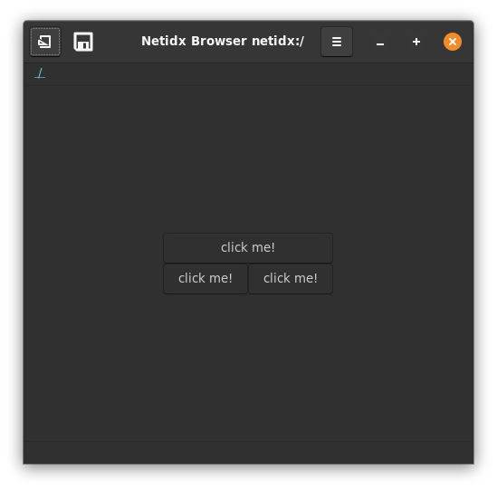
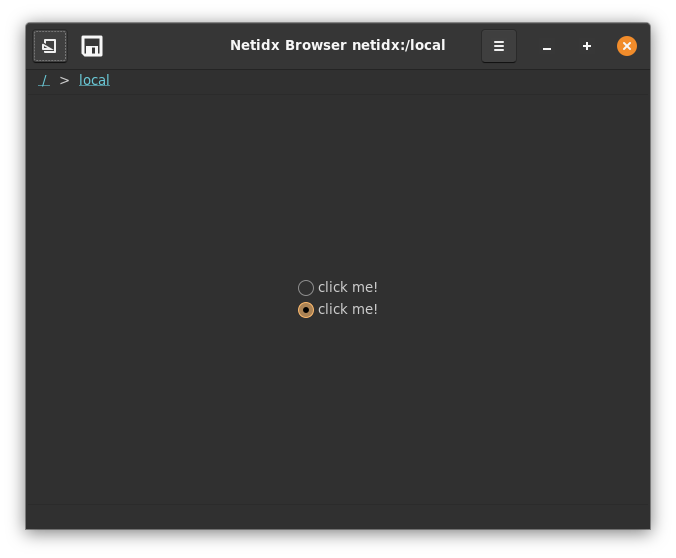
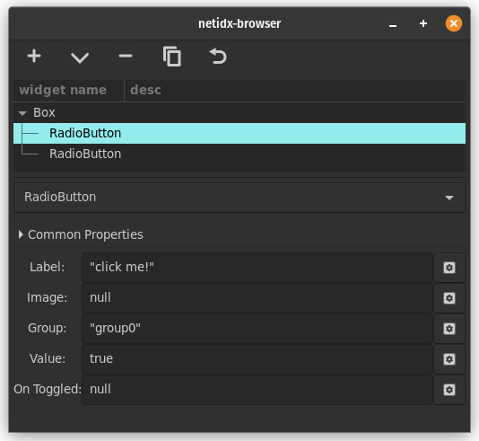
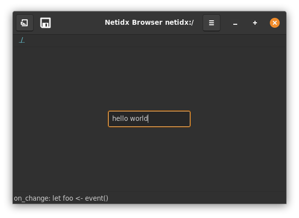
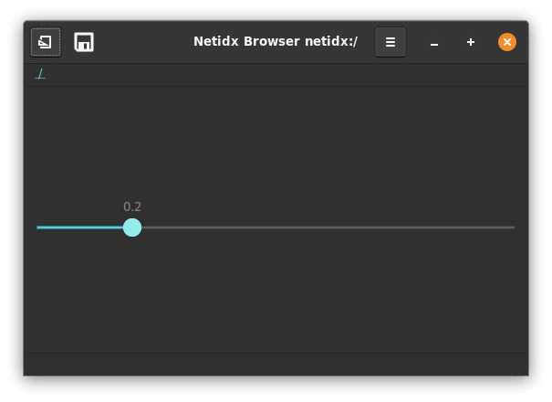

Quick Start for Linux
In this quick start we will set up a Netidx resolver server and related tools on your local machine. This configuration is sufficient for doing development of netidx services and for trying out various publishers, subscribers, and tools without much setup.
First Install Rust and Netidx
Install rust via rustup if you haven't already. Ensure cargo is in your and then run,
cargo install netidx-tools
if you are on Max OS you must use,
cargo install --no-default-features netidx-tools
This will build and install the netidx command, which contains all
the built in command line tools necessary to run to the resolver
server, as well as the publisher/subscriber command line tools
You will need some build dependencies,
- libclang, necessary for bindgen, on debian/ubuntu
sudo apt install libclang-dev - gssapi, necessary for kerberos support, on debian/ubuntu
sudo apt install libkrb5-dev
Resolver Server Configuration
{
"parent": null,
"children": [],
"member_servers": [
{
"pid_file": "",
"addr": "127.0.0.1:4564",
"max_connections": 768,
"hello_timeout": 10,
"reader_ttl": 60,
"writer_ttl": 120,
"auth": {
"Local": "/tmp/netidx-auth"
}
}
],
"perms": {
"/": {
"wheel": "swlpd",
"adm": "swlpd",
"domain users": "sl"
}
}
}
Install the above config in
~/.config/netidx/resolver.json. This is the config for the
local resolver on your machine. Make sure port 4564 is free, or change
it to a free port of your choosing. If necessary you can change the
local auth socket to one of your choosing.
run netidx resolver-server -c ~/.config/netidx/resolver.json. This command will return
immediatly, and the resolver server will daemonize. Check that it's
running using ps auxwww | grep netidx.
NOTE, the resolver server does not currently support Windows.
Systemd
If desired you can start the resolver server automatically with systemd.
[Unit]
Description=Netidx Activation
[Service]
ExecStart=/home/eric/.cargo/bin/netidx resolver-server -c /home/eric/.config/resolver.json -f
[Install]
WantedBy=default.target
Modify this example systemd unit to match your configuration and then
install it in ~/.config/systemd/user/netidx.service. Then you can run
systemctl --user enable netidx
and
systemctl --user start netidx
Client Configuration
{
"addrs":
[
["127.0.0.1:4564", {"Local": "/tmp/netidx-auth"}]
],
"base": "/"
}
Install the above config in ~/.config/netidx/client.json. This is
the config all netidx clients (publishers and subscribers) will use to
connect to the resolver cluster.
- On Mac OS replace
~/.config/netidxwith~/Library/Application Support/netidx. - On Windows replace
~/.config/netidxwith~\AppData\Roaming\netidx(that's{FOLDERID_RoamingAppData}\netidx)
To test the configuration run,
netidx stress -a local publisher -b 127.0.0.1/0 --delay 1000 1000 10
This will publish 10,000 items following the pattern /bench/$r/$c
where $r is a row number and $c is a column
number. e.g. /bench/100/8 corresponds to row 100 column 8. The
browser will draw this as a table with 1000 rows and 10 columns,
however for this test we will use the command line subscriber to look
at one cell in the table.
netidx subscriber -a local /bench/0/0
should print out one line like this every second
/bench/0/0|v64|1
The final number should increment, and if that works then netidx is
set up on your local machine. If it didn't work, try setting the
environment variable RUST_LOG=debug and running the stress publisher
and the subscriber again.
Optional Netidx Browser
The browser is an optional gui browser for the netidx tree, you need gtk development files installed to build it, on debian/ubuntu add those with
sudo apt install libgtk-3-dev
and then
cargo install netidx-browser
What is Netidx
Netidx is middleware that enables publishing a value, like 42, in one program and consuming it in another program, either on the same machine or across the network.
Values are given globally unique names in a hierarchical namespace. For example our published 42 might be named /the-ultimate-answer (normally we wouldn't put values directly under the root, but in this case it's appropriate). Any other program on the network can refer to 42 by that name, and will receive updates in the (unlikely) event that /the-ultimate-answer changes.
Comparison With Other Systems
-
Like LDAP
- Netidx keeps track of a hierarchical directory of values
- Netidx is browsable and queryable to some extent
- Netidx supports authentication, authorization, and encryption
- Netidx values can be written as well as read.
- Larger Netidx systems can be constructed by adding referrals between smaller systems. Resolver server clusters may have parents and children.
-
Unlike LDAP
- In Netidx the resolver server (like slapd) only keeps the location of the publisher that has the data, not the data iself.
- There are no 'entries', 'attributes', 'ldif records', etc. Every name in the system is either structural, or a single value. Entry like structure is created using hierarchy. As a result there is also no schema checking.
- One can subscribe to a value, and will then be notified immediatly if it changes.
- There are no global filters on data, e.g. you can't query for (&(cn=bob)(uid=foo)), because netidx isn't a database. Whether and what query mechanisms exist are up to the publishers. You can, however, query the structure, e.g. /foo/**/bar would return any path under foo that ends in bar.
-
Like MQTT
- Netidx values are publish/subscribe
- A single Netidx value may have multiple subscribers
- All Netidx subscribers receive an update when a value they are subscribed to changes.
- Netidx Message delivery is reliable and ordered.
-
Unlike MQTT
- In Netidx there is no centralized message broker. Messages flow directly over TCP from the publishers to the subscribers. The resolver server only stores the address of the publisher/s publishing a value.
The Namespace
Netidx values are published to a hierarchical tuple space. The structure of the names look just like a filename, e.g.
/apps/solar/stats/battery_sense_voltage
Is an example name. Unlike a file name, a netidx name may point to a value, and also have children. So keeping the file analogy, it can be both a file and a directory. For example we might have,
/apps/solar/stats/battery_sense_voltage/millivolts
Where the .../battery_sense_voltage is the number in volts, and it's
'millivolts' child gives the same number in millivolts.
Sometimes a name like battery_sense_voltage is published deep in the
hierarchy and it's parents are just structure. Unlike the file system
the resolver server will create and delete those structural containers
automatically, there is no need to manually manage them.
When a client wants to subscribe to a published value, it queries the resolver server cluster, and is given the addresses of all the publishers that publish the value. Multiple publishers can publish the same value, and the client will try all of them in a random order until it finds one that works. All the actual data flows from publishers to subscribers directly without ever going through any kind of centralized infrastructure.
The Data Format
In Netidx the data that is published is called a value. Values are mostly primitive types, consisting of numbers, strings, durations, timestamps, packed byte arrays, and arrays of values. Arrays of values can be nested.
Byte arrays and strings are zero copy decoded, so they can be a building block for sending other encoded data efficiently.
Published values have some other properties as well,
- Every non structural name points to a value
- Every new subscription immediately delivers it's most recent value
- When a value is updated, every subscriber receives the new value
- Updates arrive reliably and in the order the publisher made them (like a TCP stream)
Security
Netidx currently supports three authentication mechanisms, Kerberos v5, Local, and Tls. Local applies only on the same machine (and isn't supported on Windows), while many organizations already have Kerberos v5 deployed in the form of Microsoft Active Directory, Samba ADS, Redhat Directory Server, or one of the many other compatible solutions. Tls requires each participant in netidx (resolver server, subscriber, publisher) to have a certificate issued by a certificate authority that the others it wants to interact with trust.
Security is optional in netidx, it's possible to deploy a netidx system with no security at all, or it's possible to deploy a mixed system where only some publishers require security, with some restrictions.
- If a subscriber is configured with security, then it won't talk to publishers that aren't.
- If a publisher is configured with security, then it won't talk to a subscriber that isn't.
When security is enabled, regardless of which of the three mechanisms you get the following guarantees,
-
Mutual Authentication, the publisher knows the subscriber is who they claim to be, and the subscriber knows the publisher is who they claim to be. This applies for the resolver <-> subscriber, and resolver <-> publisher as well.
-
Confidentiality and Tamper detection, all messages are encrypted if they will leave the local machine, and data cannot be altered undetected by a man in the middle.
-
Authorization, The user subscribing to a given data value is authorized to do so. The resolver servers maintain a permissions database specifying who is allowed to do what where in the tree. Thus the system administrator can centrally control who is allowed to publish and subscribe where.
Cross Platform
While netidx is primarily developed on Linux, it has been tested on Windows, and Mac OS.
Scale
Netidx has been designed to support single namespaces that are pretty large. This is done by allowing delegation of subtrees to different resolver clusters, which can be done to an existing system without disturbing running publishers or subscribers. Resolver clusters themselves can also have a number of replicas, with read load split between them, further augmenting scaling.
At the publisher level, multiple publishers may publish the same name. When a client subscribes it will randomly pick one of them. This property can be used to balance load on an application, so long as the publishers syncronize with each other.
Publishing vmstat
In this example we build a shell script to publish the output of the venerable vmstat tool to netidx.
#! /bin/bash
BASE="/sys/vmstat/$HOSTNAME"
vmstat -n 1 | \
while read running \
blocked \
swapped \
free \
buf \
cache \
swap_in \
swap_out \
blocks_in \
blocks_out \
interrupts \
context_switches \
user \
system \
idle \
waitio \
stolen
do
echo "${BASE}/running|z32|${running}"
echo "${BASE}/blocked|z32|${blocked}"
echo "${BASE}/swapped|z32|${swapped}"
echo "${BASE}/free|u64|${free}"
echo "${BASE}/buf|u64|${buf}"
echo "${BASE}/cache|u64|${cache}"
echo "${BASE}/swap_in|z32|${swap_in}"
echo "${BASE}/swap_out|z32|${swap_out}"
echo "${BASE}/blocks_in|z32|${blocks_in}"
echo "${BASE}/blocks_out|z32|${blocks_out}"
echo "${BASE}/interrupts|z32|${interrupts}"
echo "${BASE}/context_switches|z32|${context_switches}"
echo "${BASE}/user|z32|${user}"
echo "${BASE}/system|z32|${system}"
echo "${BASE}/idle|z32|${idle}"
echo "${BASE}/waitio|z32|${waitio}"
echo "${BASE}/stolen|z32|${stolen}"
done | \
netidx publisher --spn publish/${HOSTNAME}@RYU-OH.ORG --bind 192.168.0.0/24
Lets dissect this pipeline of three commands into it's parts. First
vmstat itself, if you aren't familiar with it, is part of the procps
package on debian, which is a set of fundamental unix tools like
pkill, free, and w which would have been familiar to sysadmins
in the 80s.
vmstat -n 1
prints output like this
eric@ken-ohki:~$ vmstat -n 1
procs -----------memory---------- ---swap-- -----io---- -system-- ------cpu-----
r b swpd free buff cache si so bi bo in cs us sy id wa st
2 0 279988 4607136 1194752 19779448 0 0 5 48 14 8 15 6 79 0 0
0 0 279988 4605104 1194752 19780728 0 0 0 0 1800 3869 4 1 95 0 0
0 0 279988 4605372 1194752 19780632 0 0 0 0 1797 4175 3 1 96 0 0
0 0 279988 4604104 1194752 19781672 0 0 0 0 1982 4570 4 1 95 0 0
0 0 279988 4604112 1194752 19780648 0 0 0 0 1941 4690 3 2 95 0 0
-n means only print the header once, and 1 means print a line
every second until killed. Next we pass these lines to a shell while
loop that reads the line using the builtin read command into a shell
variable for each field. The field names were changed to be more
descriptive. In the body of the while loop we echo a path|typ|value
triple for each field. e.g. if we don't run the final pipe to netidx publisher the output of the while loop looks something like this.
/sys/vmstat/ken-ohki.ryu-oh.org/running|z32|1
/sys/vmstat/ken-ohki.ryu-oh.org/blocked|z32|0
/sys/vmstat/ken-ohki.ryu-oh.org/swapped|z32|279988
/sys/vmstat/ken-ohki.ryu-oh.org/free|u64|4644952
/sys/vmstat/ken-ohki.ryu-oh.org/buf|u64|1194896
/sys/vmstat/ken-ohki.ryu-oh.org/cache|u64|19775864
/sys/vmstat/ken-ohki.ryu-oh.org/swap_in|z32|0
/sys/vmstat/ken-ohki.ryu-oh.org/swap_out|z32|0
/sys/vmstat/ken-ohki.ryu-oh.org/blocks_in|z32|5
/sys/vmstat/ken-ohki.ryu-oh.org/blocks_out|z32|48
/sys/vmstat/ken-ohki.ryu-oh.org/interrupts|z32|14
/sys/vmstat/ken-ohki.ryu-oh.org/context_switches|z32|9
/sys/vmstat/ken-ohki.ryu-oh.org/user|z32|15
/sys/vmstat/ken-ohki.ryu-oh.org/system|z32|6
/sys/vmstat/ken-ohki.ryu-oh.org/idle|z32|79
/sys/vmstat/ken-ohki.ryu-oh.org/waitio|z32|0
/sys/vmstat/ken-ohki.ryu-oh.org/stolen|z32|0
No surprise that this is the exact format netidx publisher requires
to publish a value, so the final command in the pipeline is just
netidx publisher consuming the output of the while loop.
Running this on two of my systems results in a table viewable in the browser with two rows,

Because of the way the browser works, our regular tree structure is
automatically turned into a table with a row for each host, and a
column for each vmstat field. So we've made something that's
potentially useful to look at with very little effort. There are many
other things we can now do with this data, for example we could use
netidx record to record the history of vmstat on these machines, we
could subscribe, compute an aggregate, and republish it, or we could
sort by various columns in the browser. How about we have some fun and
pretend that all the machines running the script are part of an
integrated cluster, as if it was that easy, and so we want a total
vmstat for the cluster.
#! /bin/bash
BASE='/sys/vmstat'
declare -A TOTALS
declare -A HOSTS
netidx resolver list -w "${BASE}/**" | \
grep -v --line-buffered "${BASE}/total/" | \
sed -u -e 's/^/ADD|/' | \
netidx subscriber | \
while IFS='|' read -a input
do
IFS='/' path=(${input[0]})
host=${path[-2]}
field=${path[-1]}
if ! test -z "$host" -o -z "$field"; then
HOSTS[$host]="$host"
TOTALS["$host/$field"]=${input[2]}
T=0
for h in ${HOSTS[@]}
do
((T+=TOTALS["$h/$field"]))
done
echo "${BASE}/total/$field|${input[1]}|$T"
fi
done | netidx publisher --spn publish/${HOSTNAME}@RYU-OH.ORG --bind 192.168.0.0/24
Lets dissect this script,
netidx resolve list -w "${BASE}/**"
This lists everything under /sys/vmstat recursively, and instead of
exiting after doing that, it keeps polling every second, and if a new
thing shows up that matches the glob it lists the new thing. The
output is just a list of paths, e.g.
...
/sys/vmstat/total/blocked
/sys/vmstat/total/buf
/sys/vmstat/total/system
/sys/vmstat/blackbird.ryu-oh.org/swap_out
/sys/vmstat/ken-ohki.ryu-oh.org/buf
/sys/vmstat/ken-ohki.ryu-oh.org/idle
...
The next two commands in the pipeline serve to filter out the total
row we are going to publish (don't want to recursively total things
right), and transform the remaining lines into commands to netidx subscriber that will cause it to add a subscription. e.g.
...
ADD|/sys/vmstat/ken-ohki.ryu-oh.org/waitio
ADD|/sys/vmstat/blackbird.ryu-oh.org/blocked
ADD|/sys/vmstat/blackbird.ryu-oh.org/context_switches
ADD|/sys/vmstat/blackbird.ryu-oh.org/free
...
The above is what gets fed into the netidx subscriber command. So in
a nutshell we've said subscribe to all the things anywhere under
/sys/vmstat that are present now, or appear in the future, and
aren't part of the total row. Subscriber prints a line for each
subscription update in the form of a PATH|TYP|VAL triple, e.g.
..
/sys/vmstat/ken-ohki.ryu-oh.org/swap_out|z32|0
/sys/vmstat/ken-ohki.ryu-oh.org/blocks_in|z32|0
/sys/vmstat/ken-ohki.ryu-oh.org/blocks_out|z32|16
/sys/vmstat/ken-ohki.ryu-oh.org/interrupts|z32|1169
/sys/vmstat/ken-ohki.ryu-oh.org/context_switches|z32|3710
/sys/vmstat/ken-ohki.ryu-oh.org/user|z32|3
/sys/vmstat/ken-ohki.ryu-oh.org/system|z32|1
/sys/vmstat/ken-ohki.ryu-oh.org/idle|z32|96
...
That gets passed into our big shell while loop, which uses the read
builtin to read each line into an array called input. So in the body
of each iteration of the the while loop the variable input will be
an array with contents e.g.
[/sys/vmstat/ken-ohki.ryu-oh.org/swap_out, v32, 25]
Indexed starting at 0 as is the convention in bash. We split the path
into an array called path, the last two elements of which are
important to us. The last element is the field (e.g. swap_out), and
the second to last is the host. Each line is an update to one field of
one host, and when a field of a host is updated we want to compute the
sum of that field for all the hosts, and then print the new total for
that field. To do this we need to remember each field for each host,
since only one field of one host gets updated at a time. For this we
use an associative array with a key of $host/$field, thats
TOTALS. We also need to remember all the host names, so that when we
are ready to compute our total, we can look up the field for every
host, that's HOSTS. Finally we pass the output of this while loop to
the publisher, and now we have a published total row.
Administration
First Things First
If you plan to use Kerberos make sure you have it set up properly, including your KDC, DNS, DHCP, etc. If you need help with kerberos I suggest the O'REILLY book. If you want something free the RedHat documentation isn't too bad, though it is somewhat specific to their product.
Problems with Kerberos/GSSAPI can often be diagnosed by setting
KRB5_TRACE=/dev/stderr, and/or RUST_LOG=debug. GSSAPI errors can
sometimes be less than helpful, but usually the KRB5_TRACE is more
informative.
Resources and Gotchas
-
Expect to use about 500 MiB of ram in the resolver server for every 1 million published values.
-
Both read and write operations will make use of all available logical processors on the machine. So, in the case you are hitting performance problems, try allocating more cores before taking more drastic segmentation steps.
-
Even when the resolvers are very busy they should remain fair. Large batches of reads or writes are broken into smaller reasonably sized batches for each logical processor. These batches are then interleaved pseudo randomly to ensure that neither reads nor writes are starved.
-
Be mindful of the maximum number of available file descriptors per process on the resolver server machine when setting max_connections. You can easily raise this number on modern linux systems using ulimit.
-
While the resolver server drops idle read client connections fairly quickly (default 60 seconds), if you have many thousands or tens of thousands of read clients that want to do a lot of reading simultaneously then you may need to raise the maximum number of file descriptors available, and/or deploy additional processes to avoid file descriptor exhaustion.
-
Some implementations of Krb5/GSSAPI keep a file descriptor open for every active client/server session, which in our case means every read client, but also every publisher, connected or not. This has been fixed in recent versions of MIT Kerberos (but may still manifest if you are running with KRB5_TRACE). Keep this in mind if you're seeing file descriptor exhaustion.
Resolver Server Configuration
Each resolver server cluster shares a configuration file. At startup time each member server is told it's zero based index in the list of member servers. Since the default is 0 the argument can be omitted if there is only one server in the cluster.
Here is an example config file for a resolver cluster that lives in the middle of a three level hierarchy. Above it is the root server, it is responsible for the /app subtree, and it delegates /app/huge0 and /app/huge1 to child servers.
{
"parent": {
"path": "/app",
"ttl": 3600,
"addrs": [
[
"192.168.0.1:4654",
{
"Krb5": "root/server@YOUR-DOMAIN"
}
]
]
},
"children": [
{
"path": "/app/huge0",
"ttl": 3600,
"addrs": [
[
"192.168.0.2:4654",
{
"Krb5": "huge0/server@YOUR-DOMAIN"
}
]
]
},
{
"path": "/app/huge1",
"ttl": 3600,
"addrs": [
[
"192.168.0.3:4654",
{
"Krb5": "huge1/server@YOUR-DOMAIN"
}
]
]
}
],
"member_servers": [
{
"pid_file": "/var/run/netidx",
"addr": "192.168.0.4:4564",
"max_connections": 768,
"hello_timeout": 10,
"reader_ttl": 60,
"writer_ttl": 120,
"auth": {
"Krb5": "app/server@YOUR-DOMAIN"
}
}
],
"perms": {
"/app": {
"wheel": "swlpd",
"adm": "swlpd",
"domain users": "sl"
}
}
}
parent
This section is either null if the cluster has no parent, or a record specfying
-
path: The path where this cluster attaches to the parent. For example a query for something in /tmp would result in a referral to the parent in the above example, because /tmp is not a child of /app, so this cluster isn't authoratative for /tmp. It's entirely posible that the parent isn't authoratative for /tmp either, in which case the client would get another referral upon querying the parent. This chain of referrals can continue until a maximum number is reached (to prevent infinite cycles).
-
ttl: How long, in seconds, clients should cache this parent. If for example you reconfigured it to point to another IP, clients might still try to go to the old ip for as long as the ttl.
-
addrs: The addresses of the servers in the parent cluster. This is a list of pairs of ip:port and auth mechanism. The authentication mechanism of the parent may not be Local, it must be either Anonymous or Krb5. In the case of Krb5 you must include the server's spn.
children
This section contains a list of child clusters. The format of each child is exactly the same as the parent section. The path field is the location the child attaches in the tree, any query at or below that path will be referred to the child.
member_servers
This section is a list of all the servers in this cluster. The fields on each server are,
-
id_map_command: Optional. The path to the command the server should run in order to map a user name to a user and a set of groups that user is a member of. Default is
/usr/bin/id. If a custom command is specified then it's output MUST be in the same format as the/usr/bin/idcommand. This command will be passed the name of the user as a single argument. Depending on the auth mechanism this "name" could be e.g.eric@RYU-OH.ORGfor kerberos, justericfor local auth, oreric.users.architect.comfor tls auth (it will pass the common name of the users' certificate) -
pid_file: the path to the pid file you want the server to write. The server id folowed by .pid will be appended to whatever is in this field. So server 0 in the above example will write it's pid to /var/run/netidx0.pid
-
addr: The socket address and port that this member server will report to clients. This should be it's public ip, the ip clients use to connect to it from the outside.
-
bind_addr: The socket address that the server will actually bind to on the local machine. This defaults to 0.0.0.0. In the case where you are behind a NAT, or some other contraption, you should set this to the private ip address corresponding to the interface you actually want to receive traffic on.
-
max_connections: The maximum number of simultaneous client connections that this server will allow. Client connections in excess of this number will be accepted and immediatly closed (so they can hopefully try another server).
-
hello_timeout: The maximum time, in seconds, that the server will wait for a client to complete the initial handshake process. Connections that take longer than this to handshake will be closed.
-
reader_ttl: The maximum time, in seconds, that the server will retain an idle read connection. Idle read connections older than this will be closed.
-
writer_ttl: The maximum time, in seconds, that the server will retain an idle write connection. Idle connections older than this will be closed, and all associated published data will be cleared. Publishers autoatically set their heartbeat interval to half this value. This is the maximum amount of time data from a dead publisher will remain in the resolver.
-
auth: The authentication mechanism used by this server. One of Anonymous, Local, Krb5, or Tls. Local must include the path to the local auth socket file that will be used to verify the identity of clients. Krb5 must include the server's spn. Tls must include the domain name of the server, the path to the trusted certificates, the server's certificate (it's CN must match the domain name), and the path to the server's private key. For example,
"Tls": { "name": "resolver.architect.com", "trusted": "trusted.pem", "certificate": "cert.pem", "private_key": "private.key" }The certificate
CNmust beresolver.architect.com. The may not be encrypted.
perms
The server perissions map. This will be covered in detail in the authorization chapter. If a member server's auth mechanism is anonymous, then this is ignored.
Client Configuration
Netidx clients such as publishers and subscribers try to load their configuration files from the following places in order.
- $NETIDX_CFG
- config_dir:
- on Linux: ~/.config/netidx/client.json
- on Windows: ~\AppData\Roaming\netidx\client.json
- on MacOS: ~/Library/Application Support/netidx/client.json
- global_dir
- on Linux: /etc/netidx/client.json
- on Windows: C:\netidx\client.json
- on MacOS: /etc/netix/client.json
Since the dirs crate is used to discover these paths, they are locally configurable by OS specific means.
Example
{
"addrs":
[
["192.168.0.1:4654", {"Krb5": "root/server@YOUR-DOMAIN"}]
],
"base": "/"
}
addrs
A list of pairs or ip:port and auth mechanism for each server in the cluster. Local should include the path to the local authentication socket file. Krb5 should include the server's spn.
base
The base path of this server cluster in the tree. This should correspond to the server cluster's parent, or "/" if it's parent is null.
default_auth
Optional. Specify the default authentication mechanism. May be one of
Anonymous, Local, Krb5, or Tls
tls
This is required only if using tls. Because netidx is a
distributed system, when in tls mode a subscriber may need to interact
with different organizations that don't necessarially trust each other enough
to share a certificate authority. That is why subscribers may be configured
with multiple identities. When connecting to another netidx entity a
subscriber will pick the identity that most closely matches the domain
of that entity. For example, in the below config, when connecting to
resolver.footraders.com the client will use the footraders.com identity.
When connecting to core.architect.com it will choose the architect.com
identity. When connecting to a-feed.marketdata.architect.com it would
choose the marketdata.architect.com identity.
When publishing, the default identity is used unless another identity is specified to the publisher.
"tls": {
"default_identity": "footraders.com",
"identities": {
"footraders.com": {
"trusted": "/home/joe/.config/netidx/footradersca.pem",
"certificate": "/home/joe/.config/netidx/footraders.crt",
"private_key": "/home/joe/.config/netidx/footraders.key"
},
"architect.com": {
"trusted": "/home/joe/.config/netidx/architectca.pem",
"certificate": "/home/joe/.config/netidx/architect.crt",
"private_key": "/home/joe/.config/netidx/architect.key"
},
"marketdata.architect.com": {
"trusted": "/home/joe/.config/netidx/architectca.pem",
"certificate": "/home/joe/.config/netidx/architectmd.crt",
"private_key": "/home/joe/.config/netidx/architectmd.key"
}
}
}
Managing TLS
Tls authentication requires a bit more care than even Kerberos. Here we'll go over a quick configuration using the openssl command line tool. I'll be using,
$ openssl version
OpenSSL 3.0.2 15 Mar 2022 (Library: OpenSSL 3.0.2 15 Mar 2022)
Setting Up a Local Certificate Authority
Unless you already have a corporate certificate authority, or you actually want to buy certificates for your netidx resolvers, publishers, and users from a commercial CA then you need to set up a certificate authority. This sounds like a big deal, but it's actually not. A CA is really just a certificate and accompanying private key that serves as the root of trust. That means that it is self signed, and people in your organization choose to trust it. It will then sign certificates for your users, publishers, and resolver servers, and they will be configured to trust certificates that it has signed.
openssl genrsa -aes256 -out ca.key 4096
This will generate the private key we will use for the local ca. This is the most important thing to keep secret. Use a strong password on it, and ideally keep it somewhere safe.
openssl req -new -key ./ca.key -x509 -sha512 -out ca.crt -days 7300 \
-subj "/CN=mycompany.com/C=US/ST=Some State/L=Some City/O=Some organization" \
-addext "basicConstraints=critical, CA:TRUE" \
-addext "subjectKeyIdentifier=hash" \
-addext "authorityKeyIdentifier=keyid:always, issuer:always" \
-addext "keyUsage=critical, cRLSign, digitalSignature, keyCertSign" \
-addext "subjectAltName=DNS:mycompany.com"
This will generate a certificate for the certificate authority and sign it with the private key.
The -addext flags add x509v3 attributes. Once this is complete we can view the certificate with
openssl x509 -text -in ca.crt
Generating User, Resolver, and Publisher Certificates
Now we can create certificates for various parts of the netidx system. Lets make one for the resolver server.
# generate the resolver server key. It must not be encrypted.
openssl genrsa -out resolver.key 4096
# generate a certificate signing request that will be signed our CA
openssl req -new -key ./resolver.key -sha512 -out resolver.req \
-subj "/CN=resolver.mycompany.com/C=US/ST=Some State/L=Some City/O=Some organization"
# sign the certificate request with the CA key and add restrictions to it using x509v3 extentions
openssl x509 -req -in ./resolver.req -CA ca.crt -CAkey ca.key \
-CAcreateserial -out resolver.crt -days 730 -extfile <(cat <<EOF
basicConstraints=critical, CA:FALSE
subjectKeyIdentifier=hash
authorityKeyIdentifier=keyid:always, issuer:always
keyUsage=nonRepudiation,digitalSignature,keyEncipherment
subjectAltName=DNS:resolver.mycompany.com
EOF
)
# check it
openssl verify -trusted ca.crt resolver.crt
This has one extra step, the generation of the request to be signed. If we were using a commercial certificate authority we would send this request to them and they would return the signed certificate to us. In this case it's just an extra file we can delete once we've signed the request.
The resolver server private key must not be encrypted, this is because it probably doesn't have any way to ask for a password on startup, since it's likely running on a headless server somewhere. So it's extra important to keep this certificate safe.
Generating user and publisher certificates is exactly the same as the above, except that they are
permitted to have password protected private keys. However if you do this, make sure there is an
askpass command configured, and that your system level keychain service is running and unlocked.
Once the password has been entered once, it will be added to the keychain and should not need to
be entered again.
It's possible to use the same certificate for multiple services, however it's probably not a great idea unless it's for multiple components of the same system (e.g. lots of publishers in a cluster), or if a user is testing a new publisher it can probably just use their certificate.
Distributing Certificates
With the configuration above you only need to distribute the CA certificate. Every netidx component that will participate needs to have a copy of it, and it needs to be configured as trusted in the client config, and the resolver server config.
Other components only need to have their own certificate, as well as their private key.
Authorization
When using the Kerberos, Local, or Tls auth mechanisms we also need to specify permissions in the cluster config file, e.g.
...
"perms": {
"/": {
"eric@RYU-OH.ORG": "swlpd"
},
"/solar": {
"svc_solar@RYU-OH.ORG": "pd"
}
}
In order to do the corresponding action in netidx a user must have that permission bit set. Permission bits are computed starting from the root proceeding down the tree to the node being acted on. The bits are accumulated on the way down. Each bit is represented by a 1 character symbolic tag, e.g.
- !: Deny, changes the meaning of the following bits to deny the corresponding permission instead of grant it. May only be the first character of the permission string.
- s: Subscribe
- w: Write
- l: List
- p: Publish
- d: Publish default
For example if I was subscribing to
/solar/stats/battery_sense_voltage we would walk down the path from
left to right and hit this permission first,
"/": {
"eric@RYU-OH.ORG": "swlpd"
},
This applies to a Kerberos principal "eric@RYU-OH.ORG", the resolver
server will check the user principal name of the user making the
request, and it will check all the groups that user is a member of,
and if any of those are "eric@RYU-OH.ORG" then it will or the
current permission set with "swlpd". In this case this gives me
permission to do anything I want in the whole tree (unless it is later
denied). Next we would hit,
"/solar": {
"svc_solar@RYU-OH.ORG": "pd"
}
Which doesn't apply to me, and so would be ignored, and since there
are no more permissions entries my effective permissions at
/solar/stats/battery_sense_voltage are "swlpd", and so I would be
allowed to subscribe.
Suppose however I changed the above entry,
"/solar": {
"svc_solar@RYU-OH.ORG": "pd",
"eric@RYU-OH.ORG": "!swl",
}
Now, in our walk, when we arrived at /solar, we would find an entry
that matches me, and we would remove the permission bits s, w, and l,
leaving our effective permissions at
/solar/stats/battery_sense_voltage as "pd". Since that doesn't give
me the right to subscribe my request would be denied. We could also do
this by group.
"/solar": {
"svc_solar@RYU-OH.ORG": "pd",
"RYU-OH\domain admins": "!swl",
}
As you would expect, this deny permission will still apply to me because I am a member of the domain admins group. If I am a member of two groups, and both groups have different bits denied, then all of them would be removed. e.g.
"/solar": {
"svc_solar@RYU-OH.ORG": "pd",
"RYU-OH\domain admins": "!swl",
"RYU-OH\enterprise admins": "!pd",
}
Now my effective permissions under /solar are empty, I can do
nothing. If I am a member of more than one group, and one denies
permissions that the other grants the deny always takes precidence.
Each server cluster is completely independent for permissions. If for example this cluster had a child cluster, the administrators of that cluster would be responsible for deciding it's permissions map.
Anonymous
It's possible to give anonymous users permissions even on a Kerberos or Local auth mechanism system, and this could allow them to use whatever functions you deem non sensitive, subject to some limitations. There is no encryption. There is no tamper protection. There is no publisher -> subscriber authentication. Anonymous users can't subscribe to non anonymous publishers. Non anonymous users can't subscribe to anonymous publishers. You name anonymous "" in the permissions file, e.g.
"/tmp": {
"": "swlpd"
}
Now /tmp is an anonymous free for all. If you have Kerberos
deployed, it's probably not that useful to build such a hybrid system,
because any anonymous publishers would not be usable by kerberos
enabled users. However it might be useful if you have embedded systems
that can't use kerberos, and you don't want to build a separate
resolver server infrastructure for them.
Groups
You'll might have noticed I'm using AD style group names above, that's
because my example setup uses Samba in ADS mode so I can test windows
and unix clients on the same domain. The most important thing about
the fact that I'm using Samba ADS and thus have the group names I have
is that it doesn't matter. Groups are just strings to netidx, for a
given user, whatever the id command would spit out for that user is
what it's going to use for the set of groups the user is in (so that
better match what's in your permissions file). You need to set up the
resolver server machines such that they can properly resolve the set
of groups every user who might use netidx is in.
Luckily you only need to get this right on the machines that run resolver servers, because that's the only place group resolution happens in netidx. You're other client and server machines can be as screwed up and inconsistent as you want, as long as the resolver server machine agrees that I'm a member of "RYU-OH\domain admins" then whatever permissions assigned to that group in the permission file will apply to me.
All the non resolver server machines need to be able to do is get
Kerberos tickets. You don't even need to set them up to use Kerberos
for authentication (but I highly recommend it, unless you really hate
your users), you can just force people to type kinit foo@BAR.COM
every 8 hours if you like.
Running the Resolver Server
As of this writing the resolver server only runs on Unix, and has only
been extensively tested on Linux. There's no reason it couldn't run on
Windows, it's just a matter of some work around group name resolution
and service integration. Starting a resolver server is done from the
netidx command line tool (cargo install netidx-tools). e.g.
$ KRB5_KTNAME=FILE:/path/to/keytab \
netidx resolver-server -c resolver.json
By default the server will daemonize, include -f to prevent that. If
your cluster has multiple replica servers then you must pass --id <index> to specify which one you are starting, however since the
default is 0 you can omit the id argument in the case where you only
have 1 replica.
You can test that it's working by running,
$ netidx resolver list /
Which should print nothing (since you have nothing published), but should not error, and should run quickly. You can use the command line publisher and subscriber to further test. In my case I can do,
[eric@blackbird ~]$ netidx publisher \
--bind 192.168.0.0/24 \
--spn host/blackbird.ryu-oh.org@RYU-OH.ORG <<EOF
/test|string|hello world
EOF
and then I can subscribe using
[eric@blackbird ~]$ netidx subscriber /test
/test|string|hello world
you'll need to make sure you have permission, that you have a keytab you can read with that spn in it, and that the service principal exists etc. You may need to, for example, run the publisher and/or resolver server with
KRB5_KTNAME=FILE:/somewhere/keytabs/live/krb5.keytab
KRB5_TRACE=/dev/stderr can be useful in debugging kerberos issues.
Listener Check
The listener check is an extra security measure that is intended to prevent an authenticated user from denying service to another publisher by overwriting it's session. When a client connects to the resolver server for write, and kerberos, tls, or local auth is enabled, then after authentication the resolver server encrypts a challenge using the newly created session. It then connects to the write address proposed by this new publisher and presents the challenge, which the publisher must answer correctly, otherwise the old session will be kept, and the new client will be disconnected. So in order to publish at a given address you must,
- Be a valid user
- Actually be listening on the write address you propose to use for publishing. And the write address must be routable from the resolver server's position on the network.
- Have permission to publish where you want to publish.
Why is the listener check important?
Since connecting to the resolver as a publisher can be done by any user who can authenticate to the resolver, and since the address and port a publisher is going to insert into the resolver server as their address is just part of the hello message, without some kind of check anyone on your network could figure out the address of an important publisher, then connect to the resolver server and say they are that publisher address, even if they don't have permission to publish. There are several implications.
- publishers on different network segments that might share ip addresses can't use the same resolver server.
- the resolver must be able to route back to every publisher, and also it must be able to actually connect. For example your firewall must allow connections both ways.
Subscription Flow
Sometimes debugging problems requires a more detailed understanding of exactly what steps are involved in a subscription.
Components

In the full kerberos enabled version of netidx the following components are involved.
- The Kerberos 5 KDC (Key Distribution Center). e.g. The AD Domain Controller.
- Resolver Cluster, holds the path of everything published and the address of the publisher publishing it.
- Subscriber
- Publisher, holds the actual data, and has previously told the resolver server about the path of all the data it has.
Step 1
- The Subscriber asks the KDC for a service ticket to talk to the Resolver Cluster. Note this only happens once for each user for some amount of time (usually hours), after which the service ticket is cached. The subscriber proves it's identity to the KDC using it's TGT.
- The KDC, having checked the validity of the subscriber's identity, generates a service ticket for the resolver server cluster. NOTE, Kerberos does not make authorization decisions, it merely allows entities to prove to each other that they are who they claim to be.
Step 2
- The Subscriber uses the service ticket to establish an encrypted GSSAPI session with the Resolver Cluster.
- Using the session it just established sends a resolve request for the paths it wants to subscribe to. All traffic is encrypted using the session.
- The Resolver Cluster verifies the presented GSSAPI token and
establishes a secure session, looks up the requested paths, and
returns a number of things to the subscriber for each path.
- The addresses of all the publishers who are publishing that path
- The service principal names of those publishers
- The permissions the subscriber has to the path
- The authorization token, which is a SHA512 hash of the concatenation of
- A secret shared by the Resolver Cluster and the Publisher
- The path
- The permissions
Step 3
- The subscriber picks a random publisher from the set of publishers publishing the path it wants, and requests a service ticket for that publisher's SPN from the KDC.
- The KDC validates the subscriber's TGT and returns a service ticket for the requested SPN, which will be cached going forward (usually for several hours).
Step 4

-
The subscriber uses the service ticket it just obtained to establish an encrypted GSSAPI session with the publisher, and using this session it sends a subscribe request, which consists of,
- The path it wants to subscribe to
- The permissions the resolver cluster gave to it
- The authorization token
-
The publisher validates the subscriber's GSSAPI token and establishes an encrypted session, and then reads the subscribe request. It looks up the request path, and assuming it is publishing that path, it constructs a SHA512 hash value of,
- The secret it shared with the resolver cluster when it initially published the path.
- The path the subscriber is requesting
- The permissions the subscriber claims to have
It then checks that it's constructed auth token matches the one the subscriber presented. Since the subscriber does not know the secret the publisher shared with the resolver server it is computationally infeasible for the subscriber to generate a valid hash value for an arbitrary path or permissions, therefore checking this hash is an effective proof that the resolver cluster really gave the subscriber the permissions it is claiming to have.
Assuming all the authentication and authorization checks out, and the publisher actually publishes the requested value, it sends the current value back to the publisher along with the ID of the subscription.
Whenever the value changes the publisher sends the new value along with the ID of the subscription to the publisher (encrypted using the GSSAPI session, and over the same TCP session that was established earlier).
Other Authentication Methods
In the case of Tls and Local authentication, the subscription flow is similar, it just doesn't involve the KDC. Under local authentication, the resolver server is listening on a unix domain socket at an agreed upon path. The client connects to the socket, and the server is able to determine the local user on the other end. It then sends the client a token that it can use to make requests. From step 2 on local auth is more or less the same as kerberos.
Tls is very similar as well, except instead of a kdc, it's doing a TLS handshake. If the certificates check out, then from step 2 on, it's pretty much identical to kerberos.
In the case of anonymous authentication it's just a simple matter of look up the address from the resolver, and then subscribe to the publisher. All the data goes in the clear.
Fault Tolerance
As a system netidx depends on fault tolerant strategies in the subscriber, publisher, and resolver server in order to minimize downtime caused by a failure. Before I talk about the specific strategies used by each component I want to give a short taxonomy of faults as I think of them so we can be clear about what I'm actually talking about.
- Hang: Where a component of the system is not 'dead', e.g. the
process is still running, but is no longer responding, or is so slow
it may as well not be responding. IMHO this is the worst kind of
failure. It can happen at many different layers, e.g.
- You can simulate a hang by sending SIGSTOP to a unix process. It isn't dead, but it also won't do anything.
- A machine with a broken network card, such that most packets are rejected due to checksum errors, it's still on the network, but it's effective bandwidth is a tiny fraction of what it should be.
- A software bug causing a deadlock
- A malfunctioning IO device
- Crash: A process or the machine it's running on crashes cleanly and completely.
- Bug: A semantic bug in the system that causes an effective end to service.
- Misconfiguration: An error in the configuration of the system that
causes it not to work. e.g.
- Resolver server addresses that are routeable by some clients and not others
- Wrong Kerberos SPNs
- Misconfigured Kerberos
- Bad tls certificates
Subscriber & Publisher
-
Hang: Most hang situations are solved by heartbeats. Publisher sends a heartbeat to every subscriber that is connected to it every 5 seconds. Subscriber disconnects if it doesn't reveive at least 1 message every 100 seconds.
Once a hang is detected it is dealt with by disconnecting, and it essentially becomes a crash.
The hang case that heartbeats don't solve is when data is flowing, but not fast enough. This could have multiple causes e.g. the subscriber is too slow, the publisher is too slow, or the link between them is too slow. Whatever the cause, the publisher can handle this condition by providing a timeout to it's
flushfunction. This will cause any subscriber that can't consume the flushed batch within the specified timeout to be disconnected. -
Crash: Subscriber allows the library user to decide how to deal with a publisher crash. If the lower level
subscribefunction is used then on being disconnected unexpecetedly by the publisher all subscriptions are notified and marked as dead. The library user is free to retry. The library user could also usedurable_subscribewhich will dilligently keep trying to resubscribe, with linear backoff, until it is successful. Regardless of whether you retry manually or usedurable_subscribeeach retry will go through the entire process again, so it will eventually try all the publishers publishing a value, and it will pick up any new publishers that appear in the resolver server.
Resolver
- Hang: Resolver clients deal with a resolver server hang with a dynamically computed timeout based on the number of requests in the batch. The rule is, minimum timeout 15 seconds or 50 microseconds per simple operation in the batch for reads (longer for complex read ops like list matching) or 100 microseconds per simple operation in the batch for writes, whichever is longer. That timeout is a timeout to get an answer, not to finish the batch. Since the resolver server breaks large batches up into smaller ones, and answers each micro batch when it's done, the timeout should not usually be hit if the resolver is just very busy, since it will be sending back something periodically for each micro batch. The intent is for the timeout to trigger if the resolver is really hanging.
- Crash: Resolver clients deal with crashes differently depending on
whether they are read or write connections.
- Read Connections (Subscriber): Abandon the current connection, wait a random
time between 1 and 12 seconds, and then go through the whole
connection process again. That roughly entails taking the list of
all servers, permuting it, and then connecting to each server in
the list until one of them answers, says a proper hello, and
successfully authenticates (if authentication is on). For each batch a
resolver client will do this abandon and reconnect dance 3 times,
and then it will give up and return an error for that
batch. Subsuquent batches will start over from the beginning. In a
nutshell read clients will,
- try every server 3 times in a random order
- only give up on a batch if every server is down or unable to answer
- remain in a good state to try new batches even if previous batches have failed
- Write Connections (Publishers): Since write connections are
responsible for replicating their data out to each resolver server
they don't include some of the retry logic used in the read
client. They do try to replicate each batch 3 times seperated by a
1-12 second pause to each server in the cluster. If after 3 tries
they still can't write to one of the servers then it is marked as
degraded. The write client will try to replicate to a degraded
server again at each heartbeat interval. In a nutshell write
clients,
- try 3 times to write to each server
- try failed servers again each 1/2
writer_ttl - never fail a batch, just log an error and keep trying
- Read Connections (Subscriber): Abandon the current connection, wait a random
time between 1 and 12 seconds, and then go through the whole
connection process again. That roughly entails taking the list of
all servers, permuting it, and then connecting to each server in
the list until one of them answers, says a proper hello, and
successfully authenticates (if authentication is on). For each batch a
resolver client will do this abandon and reconnect dance 3 times,
and then it will give up and return an error for that
batch. Subsuquent batches will start over from the beginning. In a
nutshell read clients will,
One important consequence of the write client behavior is that in the
event all the resolver servers crash, when they come back up
publishers will republish everything after a maximum of 1/2
writer_ttl has elapsed.
Command Line Tools
You don't need to program to use netidx, it comes with a set of useful command line tools!
Command Line Publisher
The command line publisher allows you to publish values to netidx from stdin. The format of a published value is pipe separated, and newline delimited. e.g.
/foo/bar|u32|42
The three fields are,
- The path
- The type
- The value
or the special form
- The path
null
or the special form
- DROP
- the path
e.g. DROP|/foo/bar stops publishing /foo/bar
or the special form
- WRITE
- the path
e.g. WRITE|/foo/bar
enables writing to /foo/bar, and publishes it as null if it was
not already published. Written values will be sent to stdout in the
same format as is written by subscriber.
If you want to publish to a path that has a | character in it then
you must escape the | with \, e.g. \|. If you want to publish a
path that has a \ in it, then you must also escape it,
e.g. \\. e.g.
/this/path/has\|pipes\|and\\in-it|string|pipe and backslash everywhere
Arguments
There are several command line options to the netidx publisher command,
-b, --bind: optional, specify the network address to bind to. This can be specified in three forms.- an expression consisting of an ip/netmask that must match a unique
network interface on the machine running the publisher. This is
prefered, e.g.
- local, selects 127.0.0.1/24
- 10.0.0.0/8 selects the interface bound to a 10.x.x.x address
- 192.168.0.0/16 selects the interface bound to a 192.168.x.x address
- The publisher will choose a free port automatically starting at 5000
- if you must specify an exact address and port e.g.
- 127.0.0.1:5000
- 127.0.0.1:0, in which case the OS will choose the port at random, depending on the OS/libc this may pick an ephemeral port, so be careful.
- a public ip followed by the first or second forms for the internal bind ip.
Use this if you are running publishers behind a NAT (e.g. aws elastic ips)
- 54.32.223.1@172.31.0.0/16 will bind to any interface matching 172.31.0.0, but will advertise it's address to the resolver as 54.32.223.1.
- 54.32.224.1@0.0.0.0/32 will bind to every interface on the local machine but will advertise it's address to the resolver as 54.32.223.1.
- 54.32.224.1:5001@172.31.23.234:5001 will bind to 172.31.23.234 on port 5001 but will advertise it's address to the resolver as 54.32.224.1:5001. This would correspond to a typical single port forward NAT situation.
- an expression consisting of an ip/netmask that must match a unique
network interface on the machine running the publisher. This is
prefered, e.g.
-a, --auth: optional, specifies the authentication mechanism, anonymous, local, or krb5.--spn: optional, required if -a krb5, the service principal name the publisher should run as. This principal must have permission to publish where you plan to publish, must exist in your krb5 infrastructure, and you must have access to a keytab with it's credentials. If that keytab is in a non standard location then you must set the environment variableKRB5_KTNAME=FILE:/the/path/to/the/keytab--upn: optional, if you want to authenticate the publisher to the resolver server as a prinicpal other than the logged in user then you can specify that principal here. You must have a TGT for the specified principal.--identity: optional, the tls identity to use for publishing.--timeout <seconds>: optional, if specified requires subscribers to consume published values within the specified number of seconds or be disconnected. By default the publisher will wait forever for a subscriber to consume an update, and as a result could consume an unbounded amount of memory.
Behavior
When started the publisher runs until killed, it reads lines from
stdin as long as stdin remains open, and attempts to parse them as
PATH|TYPE|VALUE triples. If parsing fails, it prints an error to
stderr and continues reading. If parsing succeeds it checks if it has
already published PATH, if not, it publishes it with the specified
type and value, if it has, then it updates the existing published
value. It is not an error to change the type of an existing published
value. If stdin is closed publisher does not stop, however it is no
longer possible to update existing published values, or publish new
values without restarting it.
Limitations
The command line publisher cannot be a default publisher.
Environment Variables
In addition to all the krb5 environment variables, the command line
publisher uses envlogger, and so will respond to RUST_LOG,
e.g. RUST_LOG=debug will cause the publisher to print debug and
higher priority messages to stderr.
Types
The following types are supported,
u32: unsigned 32 bit integer, 4 bytes on the wirev32: unsigned 32 bit integer LEB128 encoded, 1-5 bytes on the wire depending on how big the number is. e.g. 0-128 is just 1 bytei32: signed 32 bit integer, 4 bytes on the wirez32: signed 32 bit integer LEB128 encoded 1-5 bytes on the wireu64: unsigned 64 bit integer, 8 bytes on the wirev64: unsigned 64 bit integer LEB128 encoded, 1-10 bytes on the wirei64: signed 64 bit integer, 8 bytes on the wirez64: signed 64 bit integer LEB128 encoded, 1-10 bytes on the wiref32: 32 bit single precision floating point number, 4 bytes on the wiref64: 64 bit double precision floating point number, 8 bytes on the wiredatetime: a date + time encoded as an i64 timestamp representing the number of seconds since jan 1 1970 UTC and a u32 number of sub second nanoseconds fixing the exact point in time. 12 bytes on the wireduration: a duration encoded as a u64 number of seconds plus a u32 number of sub second nanoseconds fixing the exact duration. 12 bytes on the wirebool: true, or false. 1 byte on the wirestring: a unicode string, limited to 1 GB in length. Consuming 1-10 + number of bytes in the string on the wire (the length is LEB128 encoded)bytes: a byte array, limited to 1 GB in length, Consuming 1-10 + number of bytes in the array on the wirearray: an array of netidx values, consuming 1+zlen(array)+sum(len(elts))result: OK, or Error + string, consuming 1-1+string length bytes
Command Line Subscriber
The command line subscriber allows you to subscribe to values in
netidx. You can either specify a list of paths you want to subscribe
to on the command line, or via commands sent to stdin. Once subscribed
a line in the form PATH|TYPE|VALUE will be printed for every update
to a subscribed value, including the initial value. e.g. on my local
network I can get the battery voltage of my solar array by typing,
netidx subscriber /solar/stats/battery_sense_voltage
/solar/stats/battery_sense_voltage|f32|26.796875
Directives via stdin
The command line subscriber reads commands from stdin which can direct it to,
- subscribe to a new path
ADD|/path/to/thing/you/want/to/add
- end a subscription
DROP|/path/to/thing/you/want/to/drop
- write a value to a subscribed path
WRITE|/path/to/thing/you/want/to/write|TYPE|VALUE- if the path you are writing to has a
|in it, then you must escape it, e.g.\|. If it has a literal\in it, then you also must escape it e.g.\\.
- call a netidx rpc
CALL|/path/to/the/rpc|arg=typ:val,...,arg=typ:val- commas in the val may be escaped with
\ - args may be specified multiple times
If the subscriber doesn't recognize a command it will print an error to stderr and continue reading commands. If stdin is closed subscriber will not quit, but it will no longer be possible to issue commands.
Arguments
-
-o, --oneshot: Causes subscriber to subscribe to each requested path, get one value, and then unsubscribe. In oneshot mode, if all requested subscriptions have been processed, and either stdin is closed, or-n, --no-stdinwas also specified, then subscriber will exit. e.g.netidx subscriber -no /solar/stats/battery_sense_voltageWill subscribe to
/solar/stats/battery_sense_voltage, print out the current value, and then exit. -
-n, --no-stdin: Do not read commands from stdin, only subscribe to paths passed on the command line. In this mode it is not possible to unsubscribe, write, or add new subscriptions after the program starts. -
-r, --raw: Do not print the path and type, just the value.-noris useful for printing the value of one or more paths to stdout and then exiting. -
-t, --subscribe-timeout: Instead of retrying failed subscriptions forever, only retry them for the specified number of seconds, after that remove them, and possibly exit if-o, --oneshotwas also specified.
Notes
The format subscriber writes to stdout is compatible with the format the publisher reads (unless -r is specified). This is by design, to make applications that subscribe, manipulate, and republish data easy to write.
Resolver Command Line Tool
The resolver command line tool allows you to query and update the resolver server from the command line. There are several kinds of querys/manipulations it can perform,
list: list entries matching a specified patterntable: query the table descriptor for a pathresolve: see what a path resolves toadd: add a new entryremove: remove an entry
List
netidx resolver list /solar/stats/*
This sub command allows listing items in the resolver server that
match a specific pattern. It supports the full unix glob pattern set,
including ** meaning any number of intermediate parents, and
{thing1, thing2, thing3, ..} for specifying specific sets. e.g. on
my machine I can get all the names under the /solar namespace that
begin with battery with the following query,
$ netidx resolver list /solar/**/battery*
/solar/settings/battery_charge_current_limit
/solar/stats/battery_v_max_daily
/solar/stats/battery_current_net
/solar/stats/battery_voltage_slow
/solar/stats/battery_voltage_settings_multiplier
/solar/stats/battery_sense_voltage
/solar/stats/battery_v_min_daily
/solar/stats/battery_temperature
/solar/stats/battery_terminal_voltage
Args
List supports several arguments,
-n, --no-structure: don't list matching items that are structural only. Only list items that are actually published.-w, --watch: don't quit, instead wait for new items matching the pattern and print them out as they appear.
Table
This prints out the table desciptor for a path, which can tell you how a given path will look in the browser by default. An example 10 row 5 column table generated by the stress publisher looks like this,
$ netidx resolver table /bench
columns:
2: 10
0: 10
1: 10
4: 10
3: 10
rows:
/bench/3
/bench/5
/bench/6
/bench/9
/bench/8
/bench/7
/bench/2
/bench/4
/bench/1
/bench/0
in the columns section, the number after the column name is the number of rows in the table that have that column. Since this table is fully populated every column is associated with 10 rows.
Resolve
Given a path(s) this prints out all the information the resolver server has about that path. This is what the subscriber uses to connect to a publisher, and as such this tool is useful for debugging subscription failures. Using the same stress publisher we saw above we can query one cell in the table.
[eric@blackbird ~]$ netidx resolver resolve /local/bench/0/0
publisher: Publisher { resolver: 127.0.0.1:4564, id: PublisherId(3), addr: 127.0.0.1:5011, hash_method: Sha3_512, target_auth: Local }
PublisherId(3)
First all the publisher records are printed. This is the full information about all the publishers that publish the requested paths. Then, a list of publisher ids is printed, this is the publisher id that corresponds to each path in the order the path was specified. If we asked for two paths under the /local/bench namespace then we will see how this works.
[eric@blackbird ~]$ netidx resolver resolve /local/bench/0/0 /local/bench/0/1
publisher: Publisher { resolver: 127.0.0.1:4564, id: PublisherId(3), addr: 127.0.0.1:5011, hash_method: Sha3_512, target_auth: Local }
PublisherId(3)
PublisherId(3)
Here we can clearly see that the same publisher (publisher id 3) is the one to contact about both requested paths. This output closely mirrors how the actual information is sent on the wire (except on the wire it's binary, and the ids are varints). If multiple publishers published any of the requested paths, their ids would appear on the same line separated by commas.
In the case that nothing is publishing the requested path then the tool will print nothing and exit.
Add
This is a low level debugging tool, and it's really not recommended unless you know exactly what you're doing. Using it could screw up subscriptions to whatever path you add for some time. That said, it's pretty simple,
netidx resolver add /path/to/thing 192.168.0.5:5003
This entry will time out after a while because no publisher is there to send heartbeats for it.
Note this will not work if your system is kerberos enabled, because the resolver server checks that the publisher is actually listening on the address it claims to be listening on, and that obviously can't work in this case.
Remove
This is actually worse than add in terms of danger, because you can remove published things without the publisher knowing you did it, and as a result you can make subscriptions fail until the publisher is restarted. It also doesn't work if you are using kerberos, so that's something.
netidx resolver remove /path/to/thing 192.168.0.5:5003`
Recorder
The recorder allows you to subscribe to a set of paths defined by one or more globs and write down their values in a file with a compact binary format. Moreover, at the same time it can make the contents of an archive available for playback by multiple simultaneous client sessions, each with a potentially different start time, playback speed, end time, and position.
It's possible to set up a recorder to both record data and play it back at the same time, or only record, or only play back. It is not possible to set up one recorder to record, and another to play back the same file, however recording and playback are careful not to interfere with each other, so the only limitation should be the underlying IO device and the number of processor cores available.
Args
--example: optional, print an example configuration file--config: required, path to the recorder config file
Configuration
e.g.
{
"archive_directory": "/foo/bar",
"archive_cmds": {
"list": [
"cmd_to_list_dates_in_archive",
[]
],
"get": [
"cmd_to_fetch_file_from_archive",
[]
],
"put": [
"cmd_to_put_file_into_archive",
[]
]
},
"netidx_config": null,
"desired_auth": null,
"record": {
"spec": [
"/tmp/**"
],
"poll_interval": {
"secs": 5,
"nanos": 0
},
"image_frequency": 67108864,
"flush_frequency": 65534,
"flush_interval": {
"secs": 30,
"nanos": 0
},
"rotate_interval": {
"secs": 86400,
"nanos": 0
}
},
"publish": {
"base": "/archive",
"bind": null,
"max_sessions": 512,
"max_sessions_per_client": 64,
"shards": 0
}
}
archive_directory: The directory where archive files will be written. The archive currently being written iscurrentand previous rotated files are named the rfc3339 timestamp when they ended.archive_commands: These are shell hooks that are run when various events happenlist: Shell hook to list available historical archive files. This will be combined with the set of timestamped files inarchive_directoryto form the full set of available archive files.get: Shell hook that is run before an archive file needs to be accessed. It will be accessed just after this command returns. This can, for example, move the file into place after fetching it from long term storage. It is passed the name of the file the archiver would like, which will be in the union of the local files and the set returned by list.pub: Shell hook that is run just after the current file is rotated. Could, for example, back the newly rotated file up, or move it to long term storage.
netidx_config: Optional path to the netidx config. Omit to use the default.desired_auth: Optional desired authentication mechanism. Omit to use the default.record: Section of the config used to record, omit to only play back.spec: a list of globs describing what to record. If multiple globs are specified and they overlap, the overlapped items will only be archived once.poll_interval: How often, in seconds, to poll the resolver server for changes to the specified glob set. 0 never poll, if omitted, the default is 5 seconds.image_frequency: How often, in bytes, to write a full image of every current value, even if it did not update. Writing images increases the file size, but makes seeking to an arbitrary position in the archive much faster. 0 to disable images, in which case a seek back will read all the data before the requested position, default 64MiB.flush_frequency: How much data to write before flushing to disk, in pages, where a page is a filesystem page. default 65534. This is the maximum amount of data you will probably lose in a power outage, system crash, or program crash. The recorder uses two phase commits to the archive file to ensure that partially written data does not corrupt the file.flush_interval: How long in seconds to wait before flushing data to disk even ifflush_frequencypages was not yet written. 0 to disable, default if omitted 30 seconds.rotate_interval: How long in seconds to wait before rotating the current archive file. Default if omitted, never rotate.
publish: Section of the config file to enable publishingbase: The base path to publish atbind: The bind config to use. Omit to use the default.max_sessions: The maximum total number of replay sessions concurrently in progress.max_sessions_per_client: The maximum number of replay sessions in progress for any single client.shards: The number of recorder shards to expect. If you want to record/playback a huge namespace, or one that updates a lot, it may not be possible to use just one computer. The recorder supports sharding across an arbitrary number of processes for both recording and playback. n is the number of shards that are expected in a given cluster. playback will not be avaliable until all the shards have appeared and synced with each other, however recording will begin immediatly. default if omitted 0 (meaning just one recorder).
Using Playback Sessions
When initially started for playback or mixed operation the recorder
publishes only some cluster information, and a netidx rpc called
session under the publish-base. Calling the session rpc will
create a new session, and return the session id. Then it will publish
the actual playback session under publish-base/session-id. A
playback session consists of two sub directories, control contains
readable/writable values that control the session, and data contains
the actual data.
Creating a New Session
It's simple to call a netidx rpc with command line tools, the browser,
or programatically. To create a new playback session with default
values just write null to publish-base/session. e.g.
netidx subscriber <<EOF
WRITE|/solar/archive/session|string|null
EOF
/solar/archive/session|string|ef93a9dce21f40c49f5888e64964f93f
We just created a new playback session called ef93a9dce21f40c49f5888e64964f93f, we can see that the recorder published some new things there,
$ netidx resolver list /solar/archive/ef93a9dce21f40c49f5888e64964f93f/*
/solar/archive/ef93a9dce21f40c49f5888e64964f93f/data
/solar/archive/ef93a9dce21f40c49f5888e64964f93f/cluster
/solar/archive/ef93a9dce21f40c49f5888e64964f93f/control
If we want to pass some arguments to the rpc so our session will be setup how we like by default we can do that as well, e.g.
netidx subscriber <<EOF
CALL|/solar/archive/session|start="-3d",speed=2
EOF
CALLED|/archive/session|"ef93a9dce21f40c49f5888e64964f93f"
Now our new session would be setup to start 3 days ago, and playback at 2x speed.
Playback Controls
Once we've created a new session the recorder publishes some controls under the control directory. The five controls both tell you the state of the playback session, and allow you to control it. They are,
start: The timestamp you want playback to start at, or Unbounded for the beginning of the archive. This will always display Unbounded, or a timestamp, but it in addition to those two values it accepts writes in the form of offsets from the current time, e.g. -3d would set the start to 3 days ago. It accepts offsets [+-]N[yMdhms] where N is a number. y - years, M - months, d - days, h - hours, m - minutes, s - seconds.end: Just like start except that Unbounded, or a time in the future means that when playback reaches the end of the archive it will switch mode to tail. In tail mode it will just repeat data as it comes in. In the case that end is in the future, but not unbounded, it will stop when the future time is reached.pos: The current position, always displayed as a timestamp unless there is no data in the archive. Pos accepts writes in the form of timestamps, offsets from the current time (like start and end), and [+-]1-128 batches. e.g. -10 would seek back exactly 10 update batches, +100 would seek forward exactly 100 update batches.speed: The playback speed as a fraction of real time, or Unlimited. In the case of Unlimited the archive is played as fast as it can be read, encoded, and sent. Otherwise the recorder tries to play back the archive at aproximately the specified fraction of real time. This will not be perfect, because timing things on computers is hard, but it tries to come close.state: this is either play, pause or tail, and it accepts writes of any state and will change to the requested state if possible.
Since the controls also include a small amount of documentation meant
to render as a table, the actual value that you read from/write to is
publish-base/session-id/control/name-of-control/current.
Data
Once the session is set up the data, whatever it may be, appears under
publish-base/data. Every path that ever appears in the archive is
published from the beginning, however, if at the current pos that
path didn't have a value, then it will be set to null. This is a
slightly unfortunate compromise, as it's not possible to tell the
difference between a path that wasn't available, and one that was
intentionally set to null. When you start the playback values will be
updated as they were recorded, including replicating the observed
batching.
Deleting a Playback Session
Simply stop subscribing to any value or control in the session and the recorder will garbage collect it.
Container
The container is a persistent store for netidx values, a bit like a pasteboard, or a nosql database. At startup it reads and publishes all the data in it's database, and then waits for user interaction. When an authorized user writes to one of it's published values it updates that value in the database, and then updates the published value for subscribers. To allow creation of new values it installs a default publisher at one or more user chosen roots. If an authorized user subscribes to a path that isn't in the database, then it will add a new empty value to the database at that path. The user can then write whatever value they wish to the new path, and it will persist in the database.
As well as storing values, cells can be bscript formulas. In that case instead of storing the cell value in the database the formula text is stored, and the published value will be whatever the formula evaluates to. An additional bscript expression can be added to a formula cell to define what happens when it is written to, so a formula cell can form a proper lens. The entire bscript api is supported, except for the browser specific functions event, confirm, and navigate. There are two additional functions specific to the container. ref and rel. ref refers to a path that must be hosted by the same container, in exchange for this restriction it's quite a bit faster than load. rel takes advantage of the fact that trees can often be seen as tables to allow you to get the path of a cell by offset to current cell. For example rel(-1) gets the path of the cell in the same row, but 1 column to the left. rel(1) goes 1 column to the right. rel(-1, 0) gets the path to the cell in the same column but 1 row up.
Because bscript is an incremental language it automatically recomputes the value of a formula when something it depends on changes. Using the helpers to create "sheets" you can create something a lot like a google sheet or cloud excel sheet, multiple users can edit and view it concurrently while keeping a consistent view. With a little browser bscript you can even make it look like a spreadsheet.
Probably more interesting than replicating a cloud sheet is that you aren't limited to "spreadsheet like things", you can use bscript formulas to e.g. select and project data from elsewhere in netidx, combine it with local data and compute interesting things. However the most important difference of all is that unlike a spreadsheet the things you compute in a container sheet are not locked into some gui, they are available to be consumed by any authorized subscriber on the network, just like anything else in netidx.
Administration
Args
--compress: enable zstd compression--compress-level <0-9>: set the zstd compression level--db: the path to the db--api-path <path>: where to publish the rpc interface and db stats-b, --bind <spec>: the ip specification to bind to-a, --auth: the auth mechanism, anonymous, local, or krb5--spn <spn>: the kerberos service principal name to publish as--cache-size <bytes>: the database cache size in bytes, default 1 gigabyte--timeout <seconds>: the time after which a slow subscriber will be disconnected 0 for no timeout--sparse: don't even advertise paths in the db
A Note About Memory Use
There were some lies in the introduction. If you're a seasoned sysadmin or DBA you might have cringed when you read "reads and publishes all the data in it's database". From the point of view of the casual user that is what happens, but the reality is more complex, and a lot more efficient. The container does scan the database at startup, but it doesn't immediately publish anything except formulas. Instead it advertises all of the paths it has, which is a middle way between just becoming a default publisher, and a full publish. It tells the resolver server every path it could publish, but doesn't actually publish any of them until right before a subscriber asks for one. That means that it doesn't keep any of the data in the database in memory unless there is a client subscribed to it, and as soon as no client is subscribed it stops publishing and evicts the data from memory (though the db layer may cache it for a while). You can even turn off advertisements if you want to publish a truly huge data set. Though, in that case the user is going to have to know the name of the data they want, there will be no way to browse it, or search it, only data that someone is subscribed to will even show up in the resolver server.
RPCs
The container has an extensive rpc api, and that is the only way to do many things e.g. make a cell a formula, or add a root. Under it's api-path it also publishes information about it's status, such as whether the background database is currently busy, and how many write transactions are queued.
add-root
add-root(path)
Adds path as a root. This will cause the container to become a
default publisher for the subtree rooted at path. At least 1 root
must be added before the container will do anything. Roots can be
completely disjoint, however it is an error to add a root under an
existing root. It is not an error to add a new root above existing
roots, but for tidiness you should probably remove the child roots
after adding the parent.
e.g.
add-root("/solar/gui");
add-root("/tmp");
would make the container responsible for /tmp, and /solar/gui
remove-root
remove-root(path)
Removes path as a root. This will cause the container to stop being
a default publisher for the subtree rooted at path. If the root you
are removing has no parent root, then all the data under it will also
be removed.
lock-subtree
lock-subtree(path)
By default the container creates a free for all environment, any authorized user can subscribe to any path they like that is under a root and it will be created if it doesn't exist. This mode of operation has it's uses, but sometimes it just creates unnecessary chaos. lock-subtree turns off automatic creation by the default publisher under the specified subtree. In a locked subtree, only paths that already exist in the database, or are explicitly specified in RPC calls can be created.
The lock is hierarchical, the lock state flows down the tree, so you can express more complex situations if you need to. For example consider,
path locked
---- ------
/tmp true
/tmp/ffa false
Everything under /tmp is locked, so you can't accidentally create e.g. /tmp/foo, but everything under /tmp/ffa is unlocked, so it is once again a free for all. Later we could lock /tmp/ffa/important-thing and that would again be not a free for all. You get to the above table by making two rpc calls.
e.g.
lock-subtree(/tmp)
unlock-subtree(/tmp/ffa)
unlock-subtree
unlock-subtree(path)
See lock-subtree. unlock-subtree either removes a subtree completely from being locked, or marks a subtree as locally unlocked.
set-data
set-data(path, value)
Make the specified cell(s) plain data, and optionally set their value(s). path and value may be specified multiple times and doing so will cause multiple paths to be set. value is optional, and if omitted, cells will be set to null. If any of the specified cells are formula cells, they will be converted to data cells and the formulas will be deleted. If any of the specified cells do not exist in the database they will be added, regardless of the locked state of their subtree.
e.g.
set-data(
path=string:/tmp/the-cake,
value=bool:false,
path=string:/tmp/is-a-lie,
value=bool:true
)
set-formula
set-formula(path, formula, on-write)
Make the specified cell(s) formula cells. If they are currently data cells, delete the data and convert them to formula cells. If they don't currently exist create them regardless of the locked state of their subtree.
path may be specified multiple times to operate on multiple cells in one call. formula, and on-write may be specified zero or more times. If formula and/or on write are not specified they will be set to null.
after set-formula has been called for a cell, the formula text and
the on-write formula text will be published under path/.formula and
path/.on-write. The formula and the on-write formula may be edited
by writing to those paths as well as by calling this rpc.
e.g.
set-formula(
path=string:/tmp/sheet/00/01,
path=string:/tmp/sheet/01/01,
path=string:/tmp/sheet/02/01,
path=string:/tmp/sheet/03/01,
formula=string:sum(ref(rel(-1))\, 1)
)
set the first 4 rows of the second column of /tmp/sheet to be the
formula sum(ref(rel(-1)), 1), which will add 1 to the corresponding
cell in the first column.
delete
delete(path)
remove the specified path(s) from the database, whether data or formula, and stop publishing them. Any current subscribers will be unsubscribed. If the subtree isn't locked, durable subscribers may readd the path(s) by immediately resubscribing (but the data is gone).
delete-subtree
delete-subtree(path)
remove all the data and formulas under the specified paths(s). There is no way to undo this, so you may want to restrict access to administrators.
create-sheet
create-sheet(path, rows, columns, max-rows, max-columns, lock)
This is a helper function to create a "spreadsheet like sheet" at the specified path. It will create a tree structure that will render as a table in the browser with numbered rows and columns, e.g. /tmp/sheet/001/01 for row 1 column 1. rows is the initial number of rows, and columns is the initial number of columns. max-rows and max-columns are optional, and are used to set the string width of the number components, if they aren't specified they will be computed from rows and columns. While it is possible to exceed these values in a sheet, as tree size is only limited by memory and disk space, the sorting will be wrong if you do. lock is optional, default true, if true the subtree of the table will be automatically locked.
e.g.
create-sheet(path=string:/tmp/sheet,rows=u64:1000000,columns=u64:10)
Would pre create a pretty large sheet. This will take a while and will use some disk space, so you may want to use add-sheet-rows and/or add-sheet-columns to fill in as you go. In case know we only need 10 columns, but we might need up to 1 million rows then we could do,
e.g.
create-sheet(
path=string:/tmp/sheet,
rows=u64:1000,
columns=u64:10,
max-rows=u64:1000000
)
and then we can add-sheet-rows in batches of 1k or more up to 1m.
add-sheet-rows
add-sheet-rows(path, rows)
add rows to a previously created sheet
add-sheet-columns
add-sheet-columns(path, columns)
add columns to a previously created sheet
delete-sheet-rows
delete-sheet-rows(path, rows)
remove the specified number of rows from the end of sheet. If you want
to delete a specific row you can just just delete-subtree.
delete-sheet-columns
delete-sheet-columns(path, columns)
remove the specified number of columns from the end of sheet
create-table
create-table(path, row, column, lock)
Helper function to create a tree structure that will render in the browser as a table, and will have the specified row(s) and column(s). row and column must be specified one or more times.
e.g.
create-table(
path=string:/tmp/table,
row=string:01,
row=string:02,
row=string:03
column=string:widget,
column=string:implemented
)
will create a table with two columns "widget" and "implemented" and three rows "01", "02", and "03".
add-table-rows
add-table-rows(path, row)
add the row(s) to the specified table.
add-table-columns
add-table-columns(path, column)
add the column(s) to the specified table.
delete-table-rows
delete-table-rows(path, row)
delete the specified row(s) from the table
delete-table-columns
delete-table-columns(path, column)
delete the specified column(s) from the table
Activation
Activation is a process manager for netidx somewhat like systemd or dbus activation. It's core function is to install a default publisher at configured trigger paths, and then start a process whenever someone tries to subscribe to anything under the trigger path. Publishers for many kinds of services can thus be started on demand, and can shut down when no one is using them. This can save resources, and it can also simplify starting up all the "moving parts" of a complex service.
In fact a convenient way to run netidx on both a server or a workstation is to configure all your netidx applications, including the resolver server, as activation units, and then start the activation server on startup with systemd. There are a number of benefits to this, including, single command start/stop of everything netidx, unified logs, unified setting of environment variables like RUST_LOG, and resource control via cgroups.
Units
Each managed process is configured with a unit file. Unit files are
placed in a directory, by default /etc/netidx/activation or
~/.config/netidx/activation. The user specific directory will take
prescidence if it exists.
Here is an example activation unit triggered on access to any path
under /local/music
{
"trigger": {
"OnAccess": [
"/local/music"
]
},
"process": {
"exe": "/home/eric/.cargo/bin/demoscene",
"args": [
"--base",
"/local/music",
"--library",
"/home/eric/mus"
]
}
}
Many optional fields exist, here is a list of all possible options and their function.
trigger: either OnAccess followed by a list of paths, or OnStart.-
OnAccesswill start the process whenever a subscriber tries to subscribe to any path under one of the trigger paths. Once the process starts the activation server will remove the default publisher from the trigger paths. If the unit's process dies, the activation server will readd the default publishers to the trigger paths, but it will only start the process again if a subscriber tries to access one of the trigger paths. So unused services can shut down and will stay shut down until someone wants them.It is an error for multiple units to have overlapping triggers.
-
OnStartwill start the process when the activation server starts, and if it dies will restart it according to the restart directive of the process config.
-
process: The process config defines what to start, and gives options to control it's environment and how it should be restarted if it stops.exe: The path to the executable to start. This is the only required field of the process config. The specified file must exist and must be executable when the unit is loaded otherwise loading the unit will fail.args: A list of arguments to the executable. default [].working_directory: Path to the directory where the executable will be started. default the working directory of the activation server.uid: The numeric user id to run the process as. default the uid of the activation server.gid: The numeric group id to run the process as. default the gid of the activation server.restart: Yes, No, or RateLimited with an f64 number of seconds delay. Default"RateLimited": 1..stdin: The path to the file, pipe, etc that will be set as the processes stdin. default, inherited from the activation server.stdout: The path to the file, pipe, etc that will be set as the processes stdout. default, inherited from the activation server.stderr: The path to the file, pipe, etc that will be set as the processes stderr. default, inherited from the activation server.environment: either Inherit followed by a list of environment mappings to be overridden or replace followed by the full list of environment mappings. e.g."Inherit": { "PATH": "/bin:/usr/bin", "TERM": "xterm", ... }
Signals
Sending SIGHUP to the running activation server will cause it to
reread it's unit directory. This may trigger processes (for example a
newly added OnStart process) to start up immediatly. If unit files are
removed, their corresponding processes will be stopped upon unit
directory reread. If process config properties are changed for an
existing unit, any running process will NOT be restarted, however new
configuration directives will take effect if the process dies and is
triggered. For example if args is changed for a unit that is running,
and it later dies and is triggered again it will be started with the
new args.
On receiving SIGQUIT, SIGINT, or SIGTERM, the activation server
will stop all the processes it is managing before shutting down
itself. Managed processes are first sent SIGTERM, but if they don't
shut down within 30 seconds they are killed with SIGKILL.
Args
-f, --foreground: don't daemonize-a, --auth: auth mechanism. either anonymous, local, or krb5. default krb5.-b, --bind: bind address.-c, --config: path to the netidx client config--pid-file: path to the pid file you want the activation server to write. default no pid file.--spn: the spn of the activation server. only relevant if auth = krb5-u, --units: the path to the directory containing unit files. default/etc/netidx/activationor~/.config/netidx/activation--upn: the upn to use when connecting to the resolver, only valid if auth = krb5. default the current user.
Stress Test Tool
The stress test tool is mostly for debug and development of netidx itself. The stress publisher publishes a configurably sized table, and updates each value after a configurable timeout. The stress subscriber subscribes to every value in the table published by the stress publisher, and prints throughput statistics to stdout.
Integration Into an Existing System
Suppose we have a small daemon that we run on many computers on our network, and it knows many things about them, and does many things. I won't specify exactly what it does or everything it knows because that's irrelevant to the example. However suppose one of the things it knows is the current CPU temperature of the machine it's running on, and we would like access to that data. We heard about this new netidx thing, and we'd like to try it out on this small and not very important case. What code do we need to add to our daemon, and what options do we have for using the data?
We can modify our Cargo.toml to include netidx, and then add a small self contained module, publisher.rs
#![allow(unused)] fn main() { use anyhow::Result; use netidx::{ config::Config, path::Path, publisher::{Publisher, Val, Value}, resolver_client::DesiredAuth, }; pub struct HwPub { publisher: Publisher, cpu_temp: Val, } impl HwPub { pub async fn new(host: &str, current: f64) -> Result<HwPub> { // load the site cluster config from the path in the // environment variable NETIDX_CFG, or from // dirs::config_dir()/netidx/client.json if the environment // variable isn't specified, or from ~/.netidx.json if the // previous file isn't present. Note this uses the cross // platform dirs library, so yes, it does something reasonable // on windows. let cfg = Config::load_default()?; // for this small service we don't need authentication let auth = DesiredAuth::Anonymous; // listen on any unique address matching 192.168.0.0/24. If // our network was large and complex we might need to make // this a passed in configuration option, but lets assume it's // simple. let publisher = Publisher::new(cfg, auth, "192.168.0.0/24".parse()?).await?; // We're publishing stats about hardware here, so lets put it // in /hw/hostname/cpu-temp, that way we keep everything nice // and organized. let path = Path::from(format!("/hw/{}/cpu-temp", host)); let cpu_temp = publisher.publish(path, Value::F64(current))?; // Wait for the publish operation to be sent to the resolver // server. publisher.flushed().await; Ok(HwPub { publisher, cpu_temp }) } pub async fn update(&self, current: f64) { // start a new batch of updates. let mut batch = self.publisher.start_batch(); // queue the current cpu-temp in the batch self.cpu_temp.update(&mut batch, Value::F64(current)); // send the updated value out to subscribers batch.commit(None).await } } }
Now all we would need to do is create a HwPub on startup, and call HwPub::update whenever we learn about a new cpu temperature value. Of course we also need to deploy a resolver server, and distribute a cluster config to each machine that needs one, that will be covered in the administration section.
Using the Data We Just Published
So now that we have our data in netidx, what are our options for consuming it? The first option, and often a very good one for a lot of applications is the shell. The netidx command line tools are designed to make this interaction easy, here's an example of how we might use the data.
#! /bin/bash
netidx subscriber -a anonymous $(netidx resolver -a anonymous list '/hw/*/cpu-temp') | \
while IFS='|' read path typ temp; do
IFS='/' pparts=($path)
if ((temp > 75)); then
echo "host: ${pparts[2]} cpu tmp is too high: ${temp}"
fi
done
Of course we can hook any logic we want into this, the shell is a very powerful tool after all. For example one thing we might want do is modify this script slightly, filter the entries with cpu temps that are too high, and then publish the temperature and the timestamp when it was observed.
#! /bin/bash
netidx subscriber -a anonymous $(netidx resolver -a anonymous list '/hw/*/cpu-temp') | \
while IFS='|' read path typ temp; do
IFS='/' pparts=($path)
if ((temp > 75)); then
echo "/hw/${pparts[2]}/overtemp-ts|string|$(date)"
echo "/hw/${pparts[2]}/overtemp|f64|$temp"
fi
done | \
netidx publisher -a anonymous --bind 192.168.0.0/24
Now we've done something very interesting, we took some data out of
netidx, did a computation on it, and published the result into the
same namespace. We can now subscribe to e.g. /hw/krusty/overtemp-ts
and we will know when that machine last went over temperature. To a
user looking at this namespace in the browser (more on that later)
there is no indication that the over temp data comes from a separate
process, on a separate machine, written by a separate person. It all
just fits together seamlessly as if it was one application.
There is actually a problem here, in that, the above code will not do quite what you might want it to do. Someone might, for example, want to write the following additional script.
#! /bin/bash
netidx subscriber -a anonymous $(netidx resolver -a anonymous list '/hw/*/overtemp-ts') | \
while IFS='|' read path typ temp; do
IFS='/' pparts=($path)
ring-very-loud-alarm ${pparts[2]}
done
To ring a very loud alarm when an over temp event is detected. This would in fact work, it just would not be as timely as the author might expect. The reason is that the subscriber practices linear backoff when it's instructed to subscribe to a path that doesn't exist. This is a good practice, in general it reduces the cost of mistakes on the entire system, but in this case it could result in getting the alarm minutes, hours, or longer after you should. The good news is there is a simple solution, we just need to publish all the paths from the start, but fill them will null until the event actually happens (and change the above code to ignore the null). That way the subscription will be successful right away, and the alarm will sound immediately after the event is detected. So lets change the code ...
#! /bin/bash
declare -A HOSTS
netidx resolver -a anonymous list -w '/hw/*/cpu-temp' | \
sed -u -e 's/^/ADD|/' | \
netidx subscriber -a anonymous | \
while IFS='|' read path typ temp
do
IFS='/' pparts=($path)
temp=$(sed -e 's/\.[0-9]*//' <<< "$temp") # strip the fractional part, if any
host=${pparts[2]}
if ((temp > 75)); then
HOSTS[$host]=$host
echo "/hw/${host}/overtemp-ts|string|$(date)"
echo "/hw/${host}/overtemp|f64|$temp"
elif test -z "${HOSTS[$host]}"; then
HOSTS[$host]=$host
echo "/hw/${host}/overtemp-ts|null"
echo "/hw/${host}/overtemp|null"
fi
done | netidx publisher -a anonymous --bind 192.168.0.0/24
We use resolver list -w to list all paths that match
/hw/*/cpu-temp, and watch for new ones that might appear later. We
take that output, which is just a list of paths, and use sed to
prepend ADD| to it, which makes it a valid subscribe request for
netidx subscriber. We then process the resulting cpu temperature
records. We check for over temp, and we store each host in an
associative array. If this is the first time we've seen a given host,
then we set it's initial overtemp-ts and overtemp to null,
otherwise we don't do anything unless it's actually too hot. Even
though it's only a little longer, this shell program has a number of
advantages over the previous version.
- It will automatically start checking the cpu temp of new hosts as they are added
- It will always publish a row for every host, but will fill it with null if it has never seen that host over temp. This allows clients to subscribe to the overtemp value and receive a timely notification when a host goes over temperature, and it's also nicer to look at in the browser.
- It handles the fractional part of the temperature properly for the shell, which can't do floating point math (in this case we don't care)
Or Maybe Shell is Not Your Jam
It's entirely possible that thinking about the above solution makes you shiver and reinforces for you that nothing should ever be written in shell. In that case it's perfectly possible to do the same thing in rust.
use anyhow::Result; use chrono::prelude::*; use futures::{ channel::mpsc::{channel, Sender}, prelude::*, }; use netidx::{ chars::Chars, config::Config, path::Path, pool::Pooled, publisher::{self, Publisher, Value}, resolver_client::{DesiredAuth, ChangeTracker, Glob, GlobSet}, subscriber::{self, Event, SubId, Subscriber, UpdatesFlags}, }; use std::{ collections::{HashMap, HashSet}, iter, sync::{Arc, Mutex}, time::Duration, }; use tokio::{task, time}; struct Temp { // we need to hang onto this reference to keep the subscription alive _current: subscriber::Dval, timestamp: publisher::Val, temperature: publisher::Val, } async fn watch_hosts( subscriber: Subscriber, publisher: Publisher, tx_current: Sender<Pooled<Vec<(SubId, Event)>>>, temps: Arc<Mutex<HashMap<SubId, Temp>>>, ) -> Result<()> { // we keep track of all the hosts we've already seen, so we don't // publish an overtemp record for any host more than once. let mut all_hosts = HashSet::new(); // we will talk directly to the resolver server cluster. The // ChangeTracker will allow us to efficiently ask if anything new // has been published under the /hw subtree. If anything has, then // we will list everything in that subtree that matches the glob // /hw/*/cpu-temp. let resolver = subscriber.resolver(); let mut ct = ChangeTracker::new(Path::from("/hw")); let pat = GlobSet::new(true, iter::once(Glob::new(Chars::from("/hw/*/cpu-temp"))?))?; loop { if resolver.check_changed(&mut ct).await? { let mut batches = resolver.list_matching(&pat).await?; for mut batch in batches.drain(..) { for path in batch.drain(..) { if let Some(host) = path.split('/').nth(2).map(String::from) { if !all_hosts.contains(&host) { // lock the temps table now to ensure the // main loop can't see an update for an // entry that isn't there yet. let mut temps = temps.lock().unwrap(); // subscribe and register to receive updates let current = subscriber.durable_subscribe(path.clone()); current.updates( UpdatesFlags::BEGIN_WITH_LAST, tx_current.clone(), ); // publish the overtemp records, both with // initial values of Null let timestamp = publisher.publish( Path::from(format!("/hw/{}/overtemp-ts", host)), Value::Null, )?; let temperature = publisher.publish( Path::from(format!("/hw/{}/overtemp", host)), Value::Null, )?; // record that we've seen the host, and // add the published overtemp record to // the temps table. all_hosts.insert(host); temps.insert( current.id(), Temp { _current: current, timestamp, temperature }, ); } } } } } // wait for anything new we've published to be flushed to the // resolver server. publisher.flushed().await; // wait 1 second before polling the resolver server again time::sleep(Duration::from_secs(1)).await } } #[tokio::main] pub async fn main() -> Result<()> { // load the default netidx config let config = Config::load_default()?; let auth = DesiredAuth::Krb5 {upn: None, spn: Some("publish/blackbird.ryu-oh.org@RYU-OH.ORG".into())}; // setup subscriber and publisher let subscriber = Subscriber::new(config.clone(), auth.clone())?; let publisher = Publisher::new(config, auth, "192.168.0.0/24".parse()?).await?; let (tx_current, mut rx_current) = channel(3); // this is where we'll store our published overtemp record for each host let temps: Arc<Mutex<HashMap<SubId, Temp>>> = Arc::new(Mutex::new(HashMap::new())); // start an async task to watch for new hosts publishing cpu-temp records task::spawn(watch_hosts( subscriber.clone(), publisher.clone(), tx_current.clone(), temps.clone(), )); while let Some(mut batch) = rx_current.next().await { let mut updates = publisher.start_batch(); { let temps = temps.lock().unwrap(); for (id, ev) in batch.drain(..) { match ev { Event::Unsubscribed => (), // Subscriber will resubscribe automatically Event::Update(v) => { if let Ok(temp) = v.cast_to::<f64>() { if temp > 75. { let tr = &temps[&id]; tr.timestamp.update(&mut updates, Value::DateTime(Utc::now())); tr.temperature.update(&mut updates, Value::F64(temp)); } } } } } } // release the lock before we do any async operations if updates.len() > 0 { updates.commit(None).await } } Ok(()) }
This does almost exactly the same thing as the shell script, the only semantic difference being that it sends an actual DateTime value for the timestamp instead of a string, which would certainly make life easier for anyone using this data, not to mention it's more efficient.
But I Just Want to Look at My Data
Up to now we've covered using the data in various kinds of programs, but what if you just want to look at it. For that you have two choices, you can write a custom tool that presents your data exactly the way you want, or you can use the netidx browser. A custom tool will always give you more control, but the browser is designed to be pretty flexible, and it allows you to get to an ok looking solution really fast. In the case of the data we've been discussing in this chapter, you get something pretty nice to look at without doing anything at all.
So what's going on here, how did we get a nice looking table out of a tree? When asked to navigate to a path the browser looks for two kinds of regular structures, and will draw something appropriate based on it's findings. One kind is a tree where the 1st level children themselves have a regular set of children. By regular I mean, with the same name. In the example we have
/hw/um01-ta07-09/cpu-temp
/hw/um01-ta07-09/overtemp-ts
/hw/um01-ta07-09/overtemp
But all the 1st level nodes have the same children, so the pattern is,
/hw/${host}/cpu-temp
/hw/${host}/overtemp-ts
/hw/${host}/overtemp
The browser discovers that regularity, and elects to make a row for each $host, and a column for each child of $host. In our case, the data is perfectly regular, and so we end up with a fully populated table with 3 columns, and a row for each host.
Browser
The browser is a graphical tool that visualizes the contents of netidx, it allows users to navigate to places of interest, view data in tabular or vector form, and construct applications with custom views and BScript.
Depending on the structure of a subtree the browser draws either a vector,
or a table,
The various components highlighted in red are,
- The path of the currently visualized subtree. To navigate, you can
click on any of the individual components, e.g. click the
/to navigate to the root, and you can refresh the current view by clicking the link to the current path,benchin this case. If you're viewing a custom view stored in a file, then this will be indicated by the current path changing to e.g.file://somwhere/in/the/file/system. - The gutter displays the path of the currently selected cell, or, in a custom view it displays the BScript bound to the currently selected or hovered object.
- Design mode button, click to enter design mode. This will display the design of the current view, and allow you to edit it. This will be covered in detail in the next section.
- The currently selected cell in a table is highlighed. If you want to write to the currently selected cell, you can press Ctrl+w, and a write dialog will appear.
- The menu button.
You can enter a subtree by double clicking anywhere in a row. To go
up, use the path links as described in 1. You can also go directly to
a specific path by using go from the menu.
A subtree will be visualized as a table if it contains a regular structure of leaf nodes that are named the same thing for multiple parents, e.g.
/base/row0/col0
/base/row0/col1
...
/base/rowN/col0
/base/rowN/col1
This will automatically visualize as a table with N rows named row0 .. rowN and 2 columns named col0 and col1. If the regular
structure necessary to infer a table doesn't exist, then the subtree
will be visualized as a vector.
GUI Builder
The browser is not only for displaying tables, it is a custom gui builder with it's own embedded scripting language and access to most of the widgets in GTK. The design mode button opens the GUI builder window, which allows you to display and modify an existing GUI as well as build one from scratch.
The GUI builder has two parts, starting from the top,
On top is the widget tree. Layout is automatic, and is based on the structure of the widget tree, as such, you get the visual look you want for your app by manipulating this tree as well as setting widget properties. You can drag and drop nodes around, and using the buttons just above the tree you can,
- create a sibling of the currently selected node
- create a child of the currently selected node
- delete the currently selected node as well as all of it's children
- duplicate the currently selected node as well as all of it's children
- undo
Below the widget tree the properties of the currently selected widget are shown. This includes all visual options, as well as event handlers.
When the GUI builder window is open, the main browser window continues to function normally. Any changes made in the design window are reflected immediatly in the main window. The currently selected widget in the widget tree is highlighted in blue in the main window.
When building GUIs using the browser, most of the interesting code should live in the publisher. However some logic specific to the user interface may be needed, and for this there is bscript, which will be covered in the next section.
Language Overview
The browser scripting language exists to glue the widgets in your gui to the inputs and outputs in netidx, and to compute your formulas in the container. If you're familiar with the model view controller gui paradigm, browser script is the controller layer. Because of it's purpose it works differently from most scripting languages, in that it is a 'reactive' or 'incremental' language. Instead of describing "steps the computer performs when I click the button" like most other languages, browser script describes where events go, and what transformations happen to them.
For example the event handler for a button might look like so,
store("[base]/app/do_action", event())
Store is a function that takes two event sources as arguments. The first is expected to describe where in netidx to write, and the second provides the values that are written. We can think of this expression as building an event pipeline that looks something like this,
get(base) ------------1-> concat_string ---------
^ |
| |
"/app/do_action" -------------2- 1
v
event() -----------------------------------2-> store
- When the user performs an action
event()emits aNullwhich is received bystoreand ultimately either written right away to the path specified by store's first argument, or retained until store's first argument is a valid path. - When the value of
baseis changed it's new value is emitted toconcat_string, which concatinates it with it's second argument (a constant) and emits the result to store. Store will then either wait for event to emit a value, or if event has already emitted a value in the past then store will write that value to the new path it just received.
Compile Time vs Run Time
When a view is first loaded all BScript expressions in it are compiled into event graphs like the one visualized above. From then on, as the view runs, events are generated and flow through the graphs, but no additional compilation takes place.
The only exception to this rule is the eval function, which compiles
and executes new BScript code on the fly from a string.
Since all BScript expressions are compiled at view load time, if you
write an expression that just immediatly does something, then whatever
it does will happen when the view is loaded. That holds true no matter
where you put it, e.g. say we put the following as the enabled
expression of a toggle.
any(true, store("/foo/bar", 42))
Since any always returns the left most event it receives, it will
evaluate to true, making the toggle enabled, however every time the
view containing this expression is loaded 42 will also be stored at
/foo/bar.
It's important to understand these semantics if you want to write more
complex applications using BScript. The bscript widget is an invisible
widget specifically meant for setting up these "background" event
graphs. For example, we might want to have a variable called base
that contains the base relative to which our view will operate. We can
easily reference this variable in all our widgets, and the correct way
to set it's value would be to put it's initialization expression in a
bscript widget. e.g.
base <- load("/where")
Scope
Bscipt variables are lexically scoped, both in terms of their lexical position in code, and the position of the widget they attach to, or in the case of the container their base path in netidx. Container widgets such as Box, Grid, Paned, etc introduce new scopes, so bscripts that are compiled in the context of these widgets may set local variables that are not visible above them. Local variable bindings are made using,
let var <- expr
This will bind a local variable var to exprin the current scope,
or will assign to an already bound local variable in the current
scope. If a variable of the same name exists in a parent scope, that
variable will be shadowed in the current scope and below, but it's
value will not be assigned, and it will remain unchanged in higher and
sibling scopes.
The bare assignment assigns to the variable in the closest scope with a matching name, and if there is no such vaiable, then it binds a global variable.
var <- expr
Either assigns to the local variable var in the current scope, or
any parent scope, if it exists, or it binds var to expr in the
global scope.
The do expr, { expr; expr; ... }, introduces a new lexical scope
unless it is the toplevel do in a script expression. e.g.
{
let var <- expr;
...
}
var has the same scope as
let var <- expr
However,
{
...;
{
let var <- expr;
...
}
...
}
In this case the inner do expr introduces a new lexical scope, so
var is only visible inside that scope and it's child scopes. You can
think of this as each toplevel script expr allowing multiple
statements at the top level. For code concision we are allowed to omit
the curly braces when we only have one statement
e.g. every toplevel bscript expression is implicitly,
{ expr }
but we can just write
expr
Types and Constants
Types in browser script correspond to the netidx value type, and are named,
- u32: unsigned 4 byte integer
- v32: unsigned leb128 encoded integer
- i32: signed 4 byte integer
- z32: signed leb128 zig-zag encoded integer
- u64: unsigned 8 byte integer
- v64: unsigned leb128 encoded integer
- i64: signed 8 byte integer
- z64: signed leb128 zig-zag encoded integer
- f32: single precision floating point number
- f64: double precision floating point number
- bool: boolean
- string: unicode string
- bytes: byte array
- array: an array of values (including arrays)
- result: ok or error:description of error
Constants may be prefixed with the type name followed by a colon, e.g.
f32:3.14
However constant expressions have a default type if none is specified,
- floating point numbers: f64
- integers: i64
- strings: string
- true/false: bool
- ok: result
e.g. 3.1415 is the same as f64:3.1415, and both forms will be
accepted.
Arrays may be specified with the syntax [ expr, expr, ... ], where
expr is a regular bscript expression. In the case that any of the
expressions defining an array update, the entire array will be
regenerated with the new value substituting for the old one.
[ load("/foo"), load("/bar") ]
Will generate a new pair whenever either foo or bar update.
Expression Interpolation
In a string literal you may substitute any number of expressions by
surrounding them with []. To produce a literal [ or ] you must
escape them with \, e.g. \[ and \]. To produce a literal \ you
may escape it as well, e.g. \\. Any expression is a valid
interpolation (including another interpolation). Non string valued
expressions will be cast to strings, and any expression that cannot be
cast to a string will be replaced with the empty string.
e.g.
"[base]/some/path" => string_concat(get("base"), "/some/path")
"[base]/bar/[if(load("[base]/enabled"),"enabled","disabled")]/thing" =>
string_concat(
get("base"),
"/bar/",
if(
load(string_concat(get("base"), "/enabled")),
"enabled",
"disabled"
),
"/thing"
)
The Expression Inspector
The expression inspector shows a tree representation of a BScript expression in it's first column, and the current value of the corresponding expression in it's second.

In this case the expression being inspected is,
base <- "[archive_base]/[sessionid]/data"
You can access the expression inspector by pressing the toggle button to the right of the expression box.

Widgets
The browser supports several widgets. Most widgets also share common properties, which are found under the common properties expander in the lower half of the gui builder. The current supported common properties are,
- Horizontal Alignment: Fill, Start, End, Center, or Baseline. Fill is the default.
- Vertical Alignment: Fill, Start, End, Center, or Baseline. Fill is the default.
- expand vertically
- expand horizontally
- top margin
- bottom margin
- start margin
- end margin.
These layout properties can be adjusted until you have the layout you want in the main window. There are two additional properties, which take bscript expressions instead of static values, these are
- sensitive: true if the user can interact with the widget, false otherwise
- visible: true if the widget should be drawn, false otherwise.
Since these are bscript expressions they can change at any time and the gui will change.
Frame

The frame widget draws a frame around it's child widget, with an optional label. It supports the following static layout parameters,
- label horizontal alignment: a floating point number between 0 and 1 that controls the horizontal placement of the label, with 0 being the left and 1 being the right.
- label vertical alignment: a floating point number between 0 and 1 that controls the label's placement relative to the upper line of the frame box. 0 being fully below the line, and 1 being fully above the line.
Frame also supports the following bscript parameters,
- label: The text of the label. If this is not a string then no label will be drawn.

Box

The box widget arranges it's child widgets either vertically or horizontally. Box is one of the basic primitives of layout in the browser. It supports the following static parameters,
- direction: either vertical or horizontal.
- homogeneous: if checked then the box will force all it's children to be the same size.
- spacing: how much empty space to include between each child widget.
Boxes can be nested to achieve various layout effects.
Grid

The Grid widget allows you to layout widgets in a 2d grid. By default, grid will make a row for each of it's children. However if the child is a GridRow widget, then it's children will become columns. Individual grid children may be configured with additional parameters by placing them under GridChild widgets. This is a little complex, but with it you can get a lot of control over your layouts. The GridChild widget can tell the grid that a given widget should be more than 1 columns wide, or more than 1 rows tall. GridRows can be arranged to precisely define the rows and columns of the widget, and you can see the layout change as you drag and drop widgets around in the tree. The Grid widget supports the following static properties,
- homogeneous columns: If checked then all widgets in all columns are forced to be the same width.
- homogeneous rows: If checked then all widgets in all columns are forced to be the same height.
- column spacing: How much empty space to leave between each column
- row spacing: How much empty space to leave between each row
The GridChild widget supports the following static properties,
- width: The width, in columns, of this widget
- height: The height, in rows, of this widget
The GridRow widget is just a marker widget, it doesn't support any properties.

Paned
The paned widget creates two user resizable sub regions of the space. The division can be either vertical or horizontal. The Paned widget supports the following properties,
- direction: either vertical or horizontal.
- wide handle: if checked the handles will be wider than the default

Notebook

The notebook widget allows you to create essentailly a tabbed set of windows that the user can select, or that you can select with bscript. It supports the following static properties,
- position: The position of the tabs, top, left, bottom, or right.
- tabs visible: If this is not checked then the tabs won't be visible, bscript will be the only way to switch tabs.
- tabs scrollable: If you have too many tabs to fit on the screen checking this will make them scrollable.
- tabs have popup menu: If you have too many tabs to fit on the screen checking this will make a popup menu so the user can still select the tabs that don't fit.
As well as static properties the notebook widget also has bscript properties,
- page: the 0 indexed page that is currently selected in the notebook. When this updates the notebook will change which page is shown.
- on switch page: event() will yield the 0 indexed page that the notebook is currently displaying. That is, event() will update when the page changes.
The NotebookPage widget can be placed under the notebook in order to configure properties of each page. It has the following static properties,
- tab label: the name of the page that is displayed to the user
- reorderable: if checked then the user can reorder the pages by dragging them.

Table

The table widget is used for displaying tabular data from netidx. It is quite flexable, with many bscript properties, so it can be used for many purposes. It supports direct editing, mediated by bscript, and it can even display images, checkboxes, spin buttons, and combo boxes in cells. It's properties are,
Path
The path to the data to be displayed. This is bscript, so if it updates to a new path then the table will redraw that new path.
Sort Mode
This defines how sorting is done. Sorting can be done internally in the browser, in which case the browser will subscribe to every value in the column and will sort the values internally. It can also be done on the publisher side, or disabled entirely. Sort mode has the form,
(null | false | external | <column> | spec)
external: [false, [spec, ...]]
spec: [<column>, ("ascending" | "descending")]
-
null: The table is not sorted by default, but the user can sort by clicking on column headers. Click events will also be generated when the user clicks on the header button, see On Header Click.
-
false: sorting within the browser is disabled, but click events will still be generated when the user clicks on the header buttons. These events could be used to trigger publisher side sorting, or any other desired action. See, On Header Click.
-
external: just like
false, however sort indicators will be shown as specified by the indicator spec. Use this if you implement sorting in the publisher, but want to give the user feedback about what is sorted. Example,[false, [["artist", "descending"], ["album", "descending"]]]Indicates that sorting is happening on the publisher side, and the indicators should be show on the artist and album columns.
-
<column>: by default sort by<column>in descending order. Sorting is processed within the browser and is under the user's control. Click events will also be generated when the user clicks on the header button, see On Header Click. Example,"artist"sort by the artist column descending
-
spec: Same as column, except the sort direction is explicitly specified. Example,
["artist", "ascending"]sort by the artist column ascending
Selection Mode
This controls user selection it can be "single", "multi", or "none"
- "single": The user can only select 1 cell at a time
- "multi": The user can select multiple cells by holding shift while clicking or arrowing.
- "none": The user can't select cells
Column Filter
The column filter allows you to remove columns from the table, and also control their ordering. It has the form,
(null | true | false | list | range)
list: [list-mode, (<col> | [<col>, ...])]
range: [range-mode, [(<n> | "start"), (<m> | "end")]]
list-mode: ("include" | "exclude" | "include_match" | "exclude_match")
range-mode: ("keep" | "drop")
- null: all columns are included
- true: all columns are included
- false: no columns are included
- list: Specify a list of columns or column regexes to include or
exclude.
- "include": col/cols is a list of columns to show. The order of the columns in the list controls the order of the columns that are displayed.
- "exclude": col/cols is a list of columns to hide
- "include_match": col/cols is a list of regex patterns of columns to show
- "exclude_match": col/cols is a list of regex patterns of columns to hide
- range: Specify columns to keep or drop by numeric ranges. Range
patterns apply to the positions of columns in the sorted set.
- "keep": keep the columns specified by the range, drop any others. If the range specifies more columns than exist all columns will be kept. Matched items will be >= start and < end.
- "drop": drop the columns specified by the range, keeping the rest. If the range specifies more columns than exist all the columns will be dropped. Matched items will be < start or >= end.
Examples,
["include", ["col0", "col1", "col2"]]
include only col0, col1, and col2 in that order
["exclude", ["col0"]]
include every column except col0.
["include_match", "\[0-9\]+$"]
include all columns that end in a number
["drop", [10, "end"]]
drop all columns after column 9.
It is important to note that only "include" allows you to control the column order, in all other cases the columns will be sorted lexicographically.
Column Editable
This field has the same format as the column filter, but instead of controling visiblity it controls whether the column can be directly edited (the user can always try ctrl+w to write).
The actual editing is not direct, but must be handled by the On Edit bscript event handler. So this filter is really determining which columns can trigger that event handler.
Column Widths
This expression allows you to control the default widths of columns.
(null | widths)
widths: [[<name>, <w>], ...]
- null: initial column widths are automatically determined
- widths: The list of numeric values specify the initial width of the corresponding column.
Example,
[["col0", 300], ["col1", 200], ["col2", 50]]
Columns Resizable
if true then the user can resize columns, if false they cannot.
Column Types
Column types allows you to use columns that are not text as well as configure additional properties of text columns such as background and foreground colors. You don't have to mention every column in the column types expression. Any columns you don't mention will be plain text columns.
(null | column_types)
null: a default column type specification is generated that
displays all the columns in the filtered model as text.
column_types: [[<name>, typename, properties], ...]
typename: ("text" | "toggle" | "image" | "combo" | "spin" | "progress" | "hidden")
common: common properties shared by many columns
["source", <column-name>],
optional, the source column that contains the data for
each row. If not specified the default is this column
(<name>).
["background", <color-string>],
optional, statically specify the background color of the
cell. same format as the "foreground" attribute.
["background-column", <column-name>],
optional, the column containing the background color of
each row in the same format as described in the
"foreground" attribute.
properties: match typename
"text": [
common,
["foreground", <color-string>],
optional, statically specify the foreground text
color. Any string understood by pango_parse_color is
understood here. That includes css color names, and hex
strings in various formats.
["foreground-column", <column-name>],
optional, the column containing the foreground color of
each row, same format as for the "foreground" attribute.
]
"toggle": [
common,
["radio", (true | false)],
optional, whether to render the toggle as a check button
or a radio button.
true: the entire column is radio buttons, only one row may
be selected at any one time
false: the entire column is check buttons, which may be
individually toggled.
<column-name>: the specified boolean column controls
whether or not the toggle in each row is a radio or a
check button.
["radio-column", <column-name>]
optional, the column containing the "radio" property for
each row
]
"image": [
common,
]
"combo": [
common,
["choices", [<choice>, ...]],
The available choices globally for the entire
column. One of choices or choices-column must be
specified
["choices-column", <column-name>]
The column containing the "choices" attribute
for each row. One of choices, or choices-column must be
specified.
["has-entry", (true | false)],
optional. Should the column have an entry in addition to
the combo box menu? If true the user will be able to
enter any text they want, even if it isn't a valid
choice. If false only valid choices may be entered.
["has-entry-column", <column-name>]
optional, the column containing the has-entry attribute for each row.
]
"spin": [
common,
["min", <n>],
optional, if not specified 0 is assumed.
["min-column", <column-name>]
optional, the column containing the min attribute for each row
["max", <n>],
optional, if not specified 1 is assumed.
["max-column", <column-name>]
optonal, the column containing the max attribute for each row
["increment", <n>],
optional, the amount the value changes with each spin button press
["increment-column", <column-name>],
optional, the column containg the increment property
["page-increment", <n>]
optional, the amount the value changes on a page increment
["page-increment-column", <column-name>],
optional, the column containg the page-increment property
["climb-rate", <n>],
optional. How fast the value should change if the user
holds the + or - button down.
["climb-rate-column", <column-name>]
optional, the column specifying the climb-rate attribute for each row
["digits", <n>],
optional. The number of decimal places to display.
["digits-column", <column-name>]
optional. The column specifying the digits attribute for each row.
]
"progress": [
common,
["activity-mode", (true | false)],
optional, default false. Operate the progressbar in
activity mode (see the ProgressBar widget).
["activity-mode-column", <column-name>]
optional, the column specifying the activity mode for each row.
["text", <text>],
optional, display static text near the progress bar
["text-column", <column-name>],
optional, display text from <column-name> near the
progress bar.
["text-xalign", <n>],
optional, set the horizontal alignment of the displayed
text. 0 is full left, 1 is full right.
["text-xalign-column", <column-name>]
optional, the column specifying the text-xalign property for each row
["text-yalign", <n>],
optional, set the vertical alignment of the displayed
text. 0 is top, 1 is bottom.
["text-yalign-column", <column-name>]
optonal, the column specifying the text-yalign property for each row
["inverted", (true | false)],
optional, invert the meaning of the source data
["inverted-column", <column-name>]
optional, the column specifying the inverted property for each row
]
"hidden":
hidden is a special column type that has no properties. It
is used to hide data columns that other visible columns
depend on (so they must appear in the model), but that you
don't want to show to the user.
all the properties of progress are optional. If none are set the entire properties array may be omitted
The column type specification interacts with the column filter, in that a column type specification may name another column as the source of it's data or of a given property and the column filter may remove that column. If that occurrs the column filter takes precidence. The specified typed column will be displayed, but won't get any data if it's underlying column is filtered out.
For properties that can be statically specified and loaded from a
column, if both ways are specified then the column will override the
static specification. If the column data is missing or invalid for a
given row, then the static specification will be used. e.g. if I
specify both ["text-yalign", 1] and ["text-yalign-column", "foo"],
then 1 will be used if the data from foo is missing, otherwise foo
will be used.
Examples,
[
["images", "image", [["source", "000"]]],
["checkboxes", "toggle", [["source", "001"]]],
["combos", "combo", [["source", "002"], ["choices-column", "003"]]],
["004", "hidden", []],
["005", "hidden", []]
]
In this example we start with a container sheet, and we construct a
table with columns that don't exist in the underlying data (images,
checkboxes, and combos). These columns reference data in the
underlying table via the source attribute, and in the combos column
the choices also come from an underlying column.
Meanwhile we hide some of the underying columns. In a real application we might use these features to create a view of a dataset that is very different from what the underying table looks like "raw".
Row filter
The row filter has the same format as the column filter, except it operates on the rows of the table.
Show Row Name
By default the first column in the table is the name of the row. If this field is false then the row name will not be shown.
On Activate
This event is triggered when the user double clicks a row or presses
enter in a row. The event() function will yield null when that
happens.
On Select
This event is triggered when the user selects one or more cells in the
table. event() will yield the new selection as a list of paths.
On Edit
This event is triggered when the user edit a cell in an editable
column. event() will yield a pair of the path of the edited cell and
the new value.
On Header Click
This event is triggered when the user clicks on a column
header. event() will yield the name of the column who's header was
clicked.
The Full Table Editor

Image

The image widget allows displaying an image in the browser. The image has two bscript properties.
spec
(<icon-name> | icon-spec | <image-bytes> | image-spec)
icon-spec: [<icon-name>, icon-size]
icon-size: ("menu" | "small-toolbar" | "large-toolbar" | "dnd" | "dialog")
image-spec: [
["image", <image-bytes>],
required, the image bytes.
["width", <desired-width>],
optional, if specified the image will be scaled to the
specified width. If keep-aspect is true then the height
will also be scaled to keep the image's aspect ratio even
if height is not specified.
["height", <desired-height>],
optional, if specifed the image will be scaled to the
specified height. If keep-aspect is true then the width
will also be scaled to keep the image's aspect ratio even
if width is not specified.
["keep-aspect", (true | false)]
optional, keep the aspect ratio of the image.
]
: A string naming the stock icon from the current theme that should be displayed. The default size is "small-toolbar". - icon-spec: A pair specifying the icon name and the icon size.
- icon-size: The size of the icon
<image-bytes>: A bytes value containing the image in any format supported by gdk_pixbuf.- image-spec: an alist containing the image bytes in any format supported by gdk_pixbuf and some metadata.
Examples,
"media-floppy-symbolic"
Display the icon from the standard icon set.
<binary-png-data>
Display the png data, literally the raw bytes copied into netidx directly from the file.
On Click
This event handler is triggered when the user clicks on the
image. event() will yield null when that happens.

Label

The label widget displays a text label. It has the following bscript properties,
- Text: the contents of the label. If the value is not a string it will be converted to one.
- Min Width: The minimum desired width in characters. The widget will force the window to be at least this wide.
- Ellipsize Mode: one of "none", "start", "middle", or "end". This
property defines what happens if the text is too large to fit in the
widget.
- "none": the window will be forced to grow until the text fits
- "start": the text will be truncated and replaced with ... at the start.
- "middle": the text will be truncated and replaced with ... in the middle.
- "end": the text will be truncated and replaced with ... at the end.
- Single Line: if true then the label is restricted to a single line, newlines in the text are ignored. Otherwise it can span multiple lines.
- Selectable: if true then the text in the label is selectable, if false it is not.

Button
The button widget draws a clickable button. It has 3 bscript properties,
- Label: The text to be drawn in the button.
- Image: The image to be drawn in the button. This field uses the same format as the image widget's spec property. The image will be drawn in addition to the text label, so if you want just an image leave the text blank.
- On Click: The
event()function in this property will yieldnullwhen the user clicks the button.

Link Button

The link button draws a clickable hypertext link. It has 3 bscript properties,
-
Label: the text of the link
-
URI: The URI of the link.
-
On Activate Link: This event handler will be triggered when the link is clicked. The
event()function will yield the uri. If the handler expression yieldstrue, then the uri will be considered handled and no further action will happen. If the handler expression doesn't yieldtrue, then the uri will be handled by the system.An https uri should open the requested page in the default browser, a file uri should open the specified location in the file manager. etc. Any uri the system knows how to handle should work.
Example
any( confirm("navigate to: ", event()), sample(event(), true) )Ask the user if they want to navigate to the uri. If they say no, confirm won't update, and sample will update with true, so any will update with true, and the click event will be marked as fully handled. If they say yes, then confirm will update with the uri any will update with the uri, which isn't true, so the system handler will be invoked.

Switch

Switch draws a physically inspired switch. The user can toggle the switch by clicking it, however it's state is controlled by bscript. It has two bscript properties,
- Value: The value of the switch. If this is any value except
falseornullthen the switch is on. If it isfalseornullthen the switch is off. - On Change:
event()in this expression will yield the new requested state of the switch as a bool.falsefor offtruefor on. This handler has no direct effect on the state of the switch, instead the value should be stored such that the Value expression updates with the new state.
Toggle Button
Toggle button is like a switch, it can be pushed in or out. It's state is controlled by bscript. It has 4 bscript properties,
- Value: Whether the button is in or out. If
truethe button is in, iffalsethe button is out. - On Change:
event()will yield the new requested state of the button.truefor in,falsefor out. - Label: The text displayed in the button
- Image: The image displayed in the button. This uses the same format as the image widget's spec property. If both text and image are valid then the button will have both an image and text.
Combo Box

The combo box widget allows the user to pick from a list of values. It has 3 bscript properties,
-
Choices: The list of allowed choices. This is a list of pairs. The first element of each pair is the string that will be sent by the
event()function when the user selects the choice, and the second is the text that will be shown to the user.Example
[["1", "One"], ["2", "Two"]]The combo box will have allowed choices "One" and "Two".
-
Selected: This expression should resolve to one of the allowed choices. It controls what is displayed as selected in the combo box. Even if the user makes a different selection, if this property doesn't update the selected item won't change.
-
On Change:
event()in this expression will yield the key of the item the user has selected. The handler should arrange to update the selected property to reflect the user's change.

Radio Button

Radio buttons allow the user to select from a set of options. Radio buttons only work when there are two or more, as they are are grouped together, and within each group only one radio button may be active at a time. There are 5 bscript properties,
- Label: The text shown to the right of the radio button.
- Image: The image shown to the right of the radio button. This uses the same format as the image widget's spec property. If both image and text are present then both will be shown.
- Group: The name of the group this radio button belongs to. Only one button in each group may be active at any one time. If the user selects a new button in a group then current active button will toggle off and the new one will toggle on.
- Value: The value of the radio button,
truethe radio button is selected,falsethe radio button is not selected. If your expressions produce an inconsistent state for a given group, then the browser will pick one of the group members that is true to be the one button that is selected. If your expression doesn't update when the user selects an option, then the user's selection will override your value. - On Toggled:
event()called from this expression will yieldtrueorfalsewhen the radio button toggles.

Entry

Entry allows simple text entry. It has 3 bscript properties,
- Text: The text in the entry. This will be synced with the entry when it updates, or when the user activates the entry by pressing enter.
- On Change:
event()in this expression will yield the text of the entry every time the user changes it. - On Activate:
event()in this expression will yield the text of the entry when the user presses enter.

Search Entry
Search entry is very similar to entry, with two differences. It has iconography indicating what it does and a convenient button to clear it in one click, and it imparts a slight delay before calling On Search Changed. Like entry it has three bscript properties,
- Text: as with entry this is the text in the search entry. It is synced whenever it updates, or when the user activates the search entry by pressing enter.
- On Search Changed:
event()in this expression will yield the text of the entry when it changes, but after a slight delay. - On Activate:
event()in this expression will yield the text of the entry when the user activates the entry by pressing enter.

Scale

Scale visualizes a floating point number between a minimum and maximum value, and allows the user to drag the slider to change the value. It has several properties,
Direction
This static property indicates whether the slider is horizontal or vertical.
Draw Value
if true then the actual value is drawn, if false it is not.
Marks
Allows displaying marks along the scale's axis. When dragging the slider the browser will snap to the nearest mark, making these values easy to hit exactly.
[mark, ...]
mark: [<pos>, position-spec, (null | <text>)]
position-spec: ("left" | "right" | "top" | "bottom")
Example
[
[0.25, "bottom", "0.25"],
[0.5, "bottom", "0.5"],
[0.75, "bottom", "0.75"]
]
Will draw marks at 1/4, 1/2, and 3/4 along the axis on the bottom side.
Has Origin
If this propery is true then the left or top of the scale is
considered the origin, and the part from there to the handle will be
filled in.
Value
This defines the position of the handle. It must be between the minimum and maximum values.
Min
The minimum value, this defines the origin if Has Origin is true.
Max
The maximum value.
On Change
event() in this expression will yield the value of the slider
whenever the user changes it.
Progress Bar

Progress bar displays the progress of some task that takes long enough that you need to keep the user informed about it lest they get bored, or think the application is stuck. It has several properties,
- Ellipsize: If the text is too large for the window it will be ellipsized according to this property. Possible values are, "none", "start", "middle", "end", which specify where the text will be truncated and replaced with ...
- Fraction: How far along the task is, expressed as a float between 0 and 1.
- Pulse: If you don't know how long a task will take, but you still want to tell the user "stuff is happening", then you can set pulse to an expression that updates periodically. Each update will cause the progress bar to move. You can mix pulse and fraction, e.g. you can pulse for a while, and then set fraction, and then pulse for a while.
- Text: The text you wish to display above the progress bar, e.g. could describe what it's doing now.
- Show Text:
trueif you want to draw the text,falseotherwise.

Line Plot
The lineplot widget draws animated line plots with multiple series on a plot and numerous configuration options.
Chart Style
- Title: The title of the plot, shown on the top center.
- Fill: The background fill color, if any. If the box is unchecked then there will be no fill color
- Margin: The size of the chart margins
- Label Area: The size of the are reserved for the axis labels
Axis Style
- X Axis Label: The label of the X axis
- Y Axis Label: The label of the Y axis
- X Labels: The maximum number of points on the X axis that get labeled
- Y Labels: The maximum number of points on the Y axis that get labeled
- X Axis Grid: Draw grid lines along the X axis
- Y Axis Grid: Draw grid lines along the Y axis
Axis Range
- x min: The minimum value on the X axis. If
nullthis will be computed from the data set. - x max: The maximum value on the X axis. If
nullthis will be computed from the data set. - y min: the minimum value on the Y axis. If
nullthis will be computed from the data set. - y max: the maximum value on the Y axis. If
nullthis will be computed from the data set. - keep points: The number of points of history to keep.
Series
There can be multiple series on a line plot, use the + and - buttons to add/remove series from a plot.
- Title: The title of the series
- Line Color: The color of the line associated with the series
- X: The expression that generates the X coordinate of the series
- Y: The expression that generates the Y coordinate of the series
Example
X: { let tick <- count(timer(f64:0.5, 1024)); tick }
Y: product(tick, tick)
This will animate the plot of y = x ^ 2 2 points per second out to
x = 1024.

A Clean Slate Design Using Netidx
In the last example we added netidx publishing of one data point, and then explored what we could do with the data. In this example we're going to look at a system designed from scratch to use netidx as it's primary means of communication and control.
The system we're going to look at is the control program of an off the grid solar generator. The system uses a Prostar MPPT controller, which has a serial port over which it talks modbus. Connected to this port is raspberry pi 3, called "solar", which is connected to wifi and joined to samba ADS.
The control program is a simple translation layer between the modbus interface of the Prostar and netidx. Full source code here.
The main loop takes commands from either the local command socket, or the netidx publisher, and sends them via modbus to the charge controller, e.g.
#![allow(unused)] fn main() { loop { ... match msg { ToMainLoop::FromClient(msg, mut reply) => match msg { FromClient::SetCharging(b) => { send_reply(mb.write_coil(ps::Coil::ChargeDisconnect, !b).await, reply) .await } FromClient::SetLoad(b) => { send_reply(mb.write_coil(ps::Coil::LoadDisconnect, !b).await, reply) .await } FromClient::ResetController => { send_reply(mb.write_coil(ps::Coil::ResetControl, true).await, reply) .await } ... }
A message is either a timer Tick, on which we send out (and log) updated stats, or an actual command, which we handle individually. The publisher module is fed a new stats record read from modbus on each timer tick. e.g.
#![allow(unused)] fn main() { fn update(&self, st: &Stats) { use chrono::prelude::*; self.timestamp .update_changed(Value::DateTime(DateTime::<Utc>::from(st.timestamp))); self.software_version.update_changed(Value::V32(st.software_version as u32)); self.battery_voltage_settings_multiplier .update(Value::V32(st.battery_voltage_settings_multiplier as u32)); self.supply_3v3.update_changed(Value::F32(st.supply_3v3.get::<volt>())); self.supply_12v.update_changed(Value::F32(st.supply_12v.get::<volt>())); self.supply_5v.update_changed(Value::F32(st.supply_5v.get::<volt>())); self.gate_drive_voltage .update_changed(Value::F32(st.gate_drive_voltage.get::<volt>())); self.battery_terminal_voltage .update_changed(Value::F32(st.battery_terminal_voltage.get::<volt>())); ... }
These are all published under /solar/stats, there are a lot of them,
so I won't show them all here, you can read the full source if you're
curious. Essentially it's an infinite loop of read stats from modbus,
update netidx, flush netidx, loop.
What About Control
The above handles distributing the stats perfectly well, but for control we need some way to send commands from the subscriber back to the publisher, and that's where writes come in. If you've read the api documentation you might have noticed,
#![allow(unused)] fn main() { pub fn write(&self, v: Value) }
Continuing with the metaphor of exporting variables to a cross machine global namespace, it fits perfectly well to imagine that we can write to those variables as well as read from them, publisher willing.
Our program is going to publish three values for control,
/solar/control/charging (to control whether we are charging the
batteries), /solar/control/load (to control whether the inverter is on
or off), and /solar/control/reset (to trigger a controller
reset). These values will all be boolean, and they will be valid for
both read and write. Here is the full code of the control section,
#![allow(unused)] fn main() { struct PublishedControl { charging: Val, load: Val, reset: Val, } impl PublishedControl { fn new(publisher: &Publisher, base: &Path) -> Result<Self> { Ok(PublishedControl { charging: publisher.publish(base.append("charging"), Value::Null)?, load: publisher.publish(base.append("load"), Value::Null)?, reset: publisher.publish(base.append("reset"), Value::Null)?, }) } fn update(&self, st: &Stats) { self.charging.update_changed(match st.charge_state { ChargeState::Disconnect | ChargeState::Fault => Value::False, ChargeState::UnknownState(_) | ChargeState::Absorption | ChargeState::BulkMPPT | ChargeState::Equalize | ChargeState::Fixed | ChargeState::Float | ChargeState::Night | ChargeState::NightCheck | ChargeState::Start | ChargeState::Slave => Value::True, }); self.load.update_changed(match st.load_state { LoadState::Disconnect | LoadState::Fault | LoadState::LVD => Value::False, LoadState::LVDWarning | LoadState::Normal | LoadState::NormalOff | LoadState::NotUsed | LoadState::Override | LoadState::Start | LoadState::Unknown(_) => Value::True, }); } fn register_writable(&self, channel: fmpsc::Sender<Pooled<Vec<WriteRequest>>>) { self.charging.writes(channel.clone()); self.load.writes(channel.clone()); self.reset.writes(channel.clone()); } fn process_writes(&self, mut batch: Pooled<Vec<WriteRequest>>) -> Vec<FromClient> { batch .drain(..) .filter_map(|r| { if r.id == self.charging.id() { Some(FromClient::SetCharging(bool!(r))) } else if r.id == self.load.id() { Some(FromClient::SetLoad(bool!(r))) } else if r.id == self.reset.id() { Some(FromClient::ResetController) } else { let m = format!("control id {:?} not recognized", r.id); warn!("{}", &m); if let Some(reply) = r.send_result { reply.send(Value::Error(Chars::from(m))); } None } }) .collect() } } }
In process_writes we translate each WriteRequest that is targeted at one of the published controls into a FromClient message that the main loop will act on. So from the main loop's perspective it doesn't matter if a command came from netidx or the local control socket.
Note that it isn't necessary to do any authorization here, the publisher library has already checked that the resolver server granted the user making these writes permission to do them, and of course we can control who is authorized to write in the resolver server permissions.
For the basic day to day use case, that's all we need on the server side. The entire daemon uses 6.5 MB of ram, and almost no cpu, it could certainly run on a smaller device, though we depend on tokio, which means we at least need a unix like OS under us.
The kerberos configuration for this service is also quite simple, there is a service principal called svc_solar in samba ADS, and solar has a keytab installed for it, as well as a cron job that renews it's TGT every couple of hours.
Building a Custom GUI With Views
What we have is fine as far as it goes, we can view our stats in the browser, and we can write to the controls using the command line subscriber. It's fine for scripting, but I'd also like a gui. e.g.
This can be built using design mode in the browser, the view can then be saved to a file or written directly to a netidx path.
See the GUI Builder chapter for more information.
Wrapping Up
In this example we saw how an application can be designed more or less from the start to communicate with the outside world using netidx. We didn't cover the opportunities for scripting our solar installation now that we can control it using netidx, but we certainly could do any of the nice things we did in the last chapter. We did show an example gui, and I want to point out that having a gui in no way alters our ability to script and manipulate the system programatically. It's important to recognize that building a bespoke system with a gui as complex as the one we built AND making it scriptable over the network in a discoverable, secure, and performant way is not an easy task. Usually it just isn't worth doing, however by using netidx it was easy, and that's really the point of the whole thing.
Higher Level Protocols Built on Netidx
Netidx is meant to be a building block out of which more complex things can be constructed.
Remote Procedure Call
At the library level RPCs in netidix are just like any other RPC. The procedure name is the netidx path, the arguments are an array of netidx values. Below the library layer, mapping the RPC model into netidx is quite simple. e.g.
/app/rpcs/do_thing <- the procedure
/app/rpcs/do_thing/doc <- procedure doc string
/app/rpcs/do_thing/arg0/val <- arguments are all named, this is 'arg0'
/app/rpcs/do_thing/arg0/doc <- doc string for arg0
/app/rpcs/do_thing/arg1/val <- 'arg1'
/app/rpcs/do_thing/arg1/doc <- arg1 doc string
...
/app/rpcs/do_thing/args-can-have-any-name/val <- args can be called anything
/app/rpcs/do_thing/args-can-have-any-name/doc <- doc string
We set arguments by writing to .../arg-name/val, and we call the
procedure by writing null to the procedure. The return value of the
procedure is sent back to the caller in one of two ways. If the caller
used write_with_recipt, then the return will be sent as the reply to
that write request. If the caller did a normal write, then the
procedure value will be updated with the return value, but only for
the calling client, other clients won't receive this update.
Since there can be time in between setting argument values and triggering the procedure the rpc module keeps track of the set argument values on a per client basis. This way, multiple clients may make independent calls to the same procedure concurrently without interfering with each other. If arguments are set, but a call is not triggered within 60 seconds then the arguments may be garbage collected if the rpc server is busy.
Because the protocol is so simple, it's perfectly possible to call a
netidx rpc directly from the browser using ctrl+w, from the command
line subscriber, or even manually in a program (though the library is
more convenient).
Concurrent RPC Publishers
Because of the way netidx works it's entirely possible and supported for multiple programs on multiple machines to publish the same RPC. As long as each one publishes the same arguments clients will just pick one of them at random when initially subscribing, and will use that one from then on (unless it's forced to resubscribe for watever reason).
You might wonder, since the procedure and the arguments are different
netidx paths, how it's possible to make sure that a client sends all
it's arguments to the same procedure. Normally in netidx subscriber
picks a random publisher from the set of all publishers publishing the
path it is subscribing to. However the resolver server supports
storing flags for each path, and one of the flags is called
USE_EXISTING, which causes any subscriber to always use an existing
publisher connection (if one exists) instead of picking a random
publisher. Since the RPC library sets this flag on the procedure, and
all the arguments it publishes, subscribers will choose a random
publisher of the RPC when they subscribe to the first path of the rpc,
and thereafter they will always use that publisher (if it fails then
subscriber will pick a new random rpc publisher).
Depending on what your RPC actually does you may need more or less coordination between publishers, and the cluster protocol can help you there, but in many cases load balancing is as simple as starting more publishers to handle additional traffic.
Overhead
Once subscribed, the network overhead of calling a netidx rpc is quite low. For example, consider a procedure with 3 double precision floating point arguments that also returns a double precision float. Then the overhead of making a call to this procedure once subscribed is,
# set float arg
tag: 1 byte,
id: 1 byte,
value:
val_tag: 1 byte,
double: 8 bytes
recipt: 1 byte
# call procedure
tag: 1 byte,
id: 1 byte,
value: 1 byte,
recipt: 1 byte
So to call a three argument procedure takes 12x3 + 4, or 40 bytes on the wire, and 24 bytes of that are the actual argument data. The return value is,
tag: 1 byte,
id: 1 byte,
value:
val_tag: 1 byte,
double: 8 bytes
11 bytes for the return, 8 of which are the actual return value data. Clearly data size on the wire should be no impedement to using netidx rpc in high performance applications. Aside from data size on the wire netidx has some additional beneficial characteristics, for example, because of the way subscriber and publisher are designed it is possible for a single client to concurrently issue many rpc calls to the same publisher, and in that case the messages will automatically batch allowing processing overhead to be amortized on both sides. e.g.
#![allow(unused)] fn main() { futures::join_all(vec![ proc.call(args1), proc.call(args2), proc.call(args3) ]).await }
This will cause only one batch containing all the data needed to make all three calls to be sent to the publisher. It isn't clear whether the results will also be sent as a batch, simply because each call may take a different amount of time to produce a result.
Depending on how the handler for this rpc is written, all three calls may be evaluated in parallel on the publisher side. In fact the default behavior is for concurrent calls to the same procedure to run in parallel, in order to degrade this one would need to e.g. depend on a shared locked data structure.
Clustering
The cluster protocol uses the resolver server to ease building distributed services. A cluster is rooted at a particular path. Each member of the cluster will publish it's uuid under that path, and will poll for other members. The api provides methods to broadcast to all members, as well as determine who is the primary (based on uuid sort order). A cluster with two members might look like, e.g.
/app/cluster/2d66247f02344b5d958039a337b7e218
/app/cluster/bc60c115971e4e1b96c94a3a17f51a86
Calling the send_to_others method in either member would write a
message to the other. Also, both members would agree that
2d66247f02344b5d958039a337b7e218 is the primary, though what meaning
that has depends on the application.
An example application using the cluster protocol is the recorder. Each recorder shard has access to part of the whole data set, so in order to replay data accurately, they must coordinate creating sessions, as well as their position, rate, start, end, etc. When a shard receives an rpc call asking for a new session, it forwards that request to all the other shards. Once a session is created each shard publishes the control interface. Whenever one receives a command, it forwards that command to the other shards, ensuring that every shard stays in sync with the user's requests. In this example, the concept of "primary" is not used, as all the shards are equal.
Browser specific bscript functions. These are only defined in the browser.
confirm
confirm(msg: Expr, val: Expr)
Asks the user msg with val appended, and if they say yes produces it's second argument, otherwise does not produce anything.
e.g.
store(
"[base]/volume",
confirm(
"are you sure you want to change the volume to ",
volume
)
)
Asks the user to confirm before writing the value of the variable
volume to [base]/volume.
current_path
current_path()
Return the current path of the view in netidx (e.g. the .view netidx value), or nothing if the view is being loaded from a file. This is useful if you have an application that the view needs to interact with, and you want to make the view independent of where the application is published in netidx.
store("[current_path()]/play", event())
When the user clicks the play button, store null in play relative
to wherever the application lives in netidx.
event
event()
Produces a widget specific event depending on which widget and which
event handler the pipeline containing it is attached to. For example,
when attached to an entry on_change handler it produces the string
value of the entry whenever the user changes the text. When attached
to the on_activate handler of the entry, it produces the string value
of the entry when the user presses the Enter key. When attached to the
on_click handler of a button, it produces Null every time the button
is clicked.
e.g.
store("/text", event())
When attached to the on_change event of an entry would write the
text to /text every time the user changes it.
navigate
navigate(Expr)
Navigate the browser to the location specified by it's first argument. The syntax of a location is one of,
- a valid absolute netidx path, e.g. /foo/bar/baz
- a view file e.g. file:/path/to/view/file
- a netidx: prefixed netidx path, e.g. netidx:/foo/bar/baz
e.g.
navigate(confirm("go to ", "file:[next_view]"))
Container server specific bscript functions. These are only definied in the container.
event
event()
When placed in an on_write formula, event produces the value that the user wrote. The final value of the formula becomes the value that is actually saved.
filter_err(sum(ref(rel(1)), event()))
Sum the user's input with the column to the right to produce the final saved value, but filter out errors in case the user tries to write a non numeric value.
ref
ref(path: Expr)
This is equivelent to load(path), however it is vastly more
efficient. It only works for paths published by the same container
server as is running the formula containg ref.
ref("/container/sheet0/0000/001")
rel
rel()
rel(col: Expr)
rel(row: Expr, col: Expr)
Return the path of a cell relative to the position of the cell rel
is in. In the first form rel(), the path of the current cell will be
returned. In the second form rel(col), the path to a cell in the
same row, but a different column will be returned. In the third form
rel(row, col), the path to a cell in a different row and column will
be returned. The row and col arguments must be integers between
-255 and 255.
sum(1, ref(rel(-1)))
Add 1 to the value in the column to the left of this formula.
The standard bscript functions reference. These functions are available in all systems using bscript (currently the browser and the container server).
after_idle
after_idle(timeout: Expr, val: Expr)
After idle sets a timer when val updates, when the timer expires it
updates with the value produced by val. If val updates again
before the timer expires, then the timer is reset. The timer is a
number of seconds, fractional seconds are accepted, as well as
durations.
store("/foo", after_idle(0.8, event()))
E.G, do the store only after the user has stopped typing for 800ms.
all
all(Expr, ..., Expr)
All produces the value of it's first argument if the values of all it's arguments are equal.
all(11, load("/volume"))
Will produce 11 only when /volume is 11.
and
and(Expr, ..., Expr)
Produces true if all of it's arguments are true, otherwise false.
e.g.
and(load("/cake"), load("/diet"))
Would produce false.
any
any(Expr, ..., Expr)
Any produces an event every time any of it's arguments produce an event.
any(42, load("/foo/bar"), load("/foo/baz"))
Will produce 42, and then all the updates to /foo/bar and /foo/baz
in whatever order they arrive.
mean(any(load("/bench/0/0"), load("/bench/0/1")))
Will produce the average of the values of /bench/0/0 and
/bench/0/1.
array
array(Expr, Expr, ...)
[ Expr, Expr, ... ]
Construct an array from the values of the specified expressions. If any of the expressions update, a new array will be constructed with the updated values and the array function will update.
[ load("/foo"), load("/bar") ]
Construct a pair from the values of "/foo" and "/bar", update the pair whenever either of those values changes.
basename
basename(path: Expr)
Return the base name, or file name, of the specified path as a
string. If the argument is not a string return an error. If the path
has no basename, or the string is not a path return null
basename("/foo/bar") => "bar"
basename("/solar/stats/battery_sense_voltage") => "battery_sense_voltage"
call
call(trigger: Expr, rpc: Expr, Expr, ..., Expr)
Call the netidx rpc specified by the second argument, passing the
specified keyword arguments, and producing the return value of the
call. Keyword arguments are encoded as pairs of a name followed by a
value. The rpc will only be called when the specified trigger
updates. If the trigger is a constant then the rpc will only be called
one time after all the args are resolved.
e.g.
let sessionid <- call(
null,
"/solar/archive/session",
"start", "-10d",
"speed", "unlimited",
"play_after", "2s"
)
call /solar/archive/session one time with arguments to replay the
last 10 days, starting 2 seconds after the call finishes, at unlimited
speed, and store the resulting session id in the variable sessionid.
cast
cast(Expr, Expr)
Attempt to cast the second argument to the type specified by the first. Produce a value of the specified type, or an error if the cast is not possible.
e.g.
cast("f32", load("/volume"))
Changes volume into a single precision float if possible.
cmp
cmp(Expr, Expr, Expr)
Produces the result of performing the comparison specified by it's first argument to it's 2nd and third arugments. Valid comparisons are encoded as strings, and are called,
- eq: true if the arguments are equal
- lt: true if the first argument is less than the second one
- lte: true if the first argument is less than or equal to the second one
- gt: true if the first argument is greater than the second one
- gte: true if the first argument is greater than or equal to the second one
e.g.
cmp("lt", load("/volume"), 11)
is true if the volume is less than 11, false otherwise.
contains
contains(sub: Expr, string: Expr)
contains is true if it's arguments are both strings, and it's first argument is a substring of it's second argument.
e.g
contains("bar", "foobarbaz")
is true
count
count(Expr)
Produces the count of events produced by expr since we started execution of the pipeline.
e.g.
count(load("/volume"))
will increment every time volume changes.
divide
divide(Expr, Expr, ..., Expr)
Divides it's first argument by it's subsuquent arguments.
divide(load("/volume"), 2, load("/additional_divisor"))
First divides "/volume" by 2 and then divides it by
"/additional_divisor".
do
do(Expr, ..., Expr)
{ Expr; ...; Expr }
Do evaluates to the value of it's final argument, all other arguments are evaluated for side effect. Each do block aside from the toplevel one introduces a new lexical scope, let variables defined in such a scope are not visible outside it.
e.g.
{
let foo <- "Hello world!";
store("/tmp/foo", foo);
foo
}
evaluates to "Hello world!", but also sets the variable "foo", and stores it's value to "/tmp/foo".
ends_with
ends_with(Expr, Expr)
ends_with is true if both it's arguments are strings, and the second argument ends with the first argument.
e.g.
ends_with("foo", "metasyntacticfoo")
ends_with("hello", "hello world")
The first ends_with is true, and the second one is false
eval
eval(Expr)
Compiles and executes the browser script program specified by it's argument, or produces an error if the program is invalid. This will produce a node event graph that keeps running until the text of the code fed to eval changes, which will cause the new program to be evaluated. As such, once eval is successful for a specific program, that program will not be semantically distinguisible from bscript that is part of a view definition or in a container cell.
e.g.
eval(load("[base]/program"))
Load and execute browser script from [base]/program.
filter_err
filter_err(Expr)
Filters out errors in expr. This is equivelent to
filter(not(is_error(expr)), expr), but is more concise.
filter_err(load("/foo"))
get the non error values of /foo
filter
filter(predicate: Expr, Expr)
filter evaluates to it's second argument if it's first argument evaluates to true, otherwise it does not pass any events. Note: When the predicate transitions from false to true then filter will immediatly evaluate to the last value of it's second argument that it saw.
e.g.
filter(load("[enabled]"), load("[thing]"))
Passes on updates to "[thing]" only if "[enabled]" is true
get
get(var: Expr)
var
Produce the value of the variable specified by var, or an error if var
is not a valid variable name. The second form is syntactic sugar that
translates into get("var").
if
if(Expr, Expr, [Expr])
Produces the value of it's 2nd argument if it's first argument is true, otherwise produces the value of it's third argument, or nothing if it has no third argument.
e.g.
if(
cmp("lt", load("/volume"), 11),
load("/normal_amp"),
load("/this_one_goes_to_11")
)
If "/volume" is less than 11 then the value is "/normal_amp",
otherwise the value is "/this_one_goes_to_11".
e.g.
if(cmp("eq", 11, load("/volume")), "huzzah!")
Produces "huzzah!" if /volume is 11, otherwise nothing.
index
index(array: Expr, index: Expr)
returns the zero based indexed element from the specified array. Returns an error if it's first argument isn't an array, or if the index is out of bounds.
index([1, 2, 5], 2) => 5
isa
isa(Expr, Expr)
Produce true if the 2nd argument is the type named by the first argument, false otherwise.
e.g.
isa("f32", 10)
would produce false.
is_error
is_error(Expr)
is_error evaluates to true if it's argument evaluates to an error.
e.g.
do(
set("val", load("/tmp/thing")),
if(is_error(val), "#REF", val)
)
if load("/tmp/thing") fails then evaluate to "#REF" otherwise to the value of load("/tmp/thing").
load
load(Expr)
Subscribes to the netidx path specified by it's argument, which must evaluate to a string.
e.g.
load("/some/path/in/netidx")
load("[base]/thing")
max
max(Expr, ..., Expr)
Produces the largest value of any of it's arguments.
e.g.
max(5, load("/volume"))
produces the value of "/volume" if it is greater than 5, otherwise it produces 5.
mean
mean(Expr)
Computes the average of it's argument over time.
e.g.
mean(load("/volume"))
Produce the average volume over the observed time period.
min
min(Expr, ..., Expr)
Produces the smallest value of any of it's arguments.
e.g.
min(42, load("/volume"))
produces the value of "/volume" if it is less than 42, otherwise it
produces 42.
not
not(Expr)
Produces the opposite of it's argument, e.g. true if it's argument is false, false otherwise.
e.g.
not(load("/solar/control/charging"))
true if the battery is not charging.
once
once(Expr)
Returns the value of expr one time. Ignores subsuquent updates.
let foo <- once(filter_err(load("/foo")))
Save a snapshot of the first non error value of /foo.
or
or(Expr, ..., Expr)
Produces true if any of it's arguments is true, otherwise false.
e.g.
or(load("/cake"), load("/death"))
Would produce true.
product
product(Expr, ..., Expr)
Produces the product of it's arguments.
e.g.
product(2, 2)
replace
replace(pat: Expr, replacement: Expr, val: Expr)
assuming all it's arguments are strings then replace evaluates to val with all instances of pat replaced with replacement.
e.g.
replace("foo", "bar", "foobarbaz")
evaluates to "barbarbaz"
sample
sample(Expr, Expr)
Produces the value of it's second argument when it's first argument updates.
e.g.
sample(load("[base]/timestamp"), load("[base]/voltage"))
Produces [base]/voltage whenever [base]/timestamp updates.
set
set(name: Expr, val: Expr)
name <- val
Store the value of val in the variable specified by name. Return nothing, or an error if name is not a valid variable name. Set will set the variable defined in the lexical scope closest to it. If the variable is not defined yet, then set will set it in the global scope. The second form is a more consise syntax for the first, however it is less powerful, as name must be a literal name and may not be an expression.
e.g.
set("volume", cast("f32", event()))
starts_with
starts_with(pat: Expr, val: Expr)
evaluates to true if both it's arguments are strings, and the second argument starts with the first.
e.g.
starts_with("Hello", "Hello World!")
evaluates to true
store
store(path: Expr, val: Expr)
store writes val to the specified path assuming it is valid. Store does not evaluate to anything (in the future it may evaluate to the result of the store).
A new write will be initiated each time the value of either argument changes. For example, if the path changes to a new valid path, then the most recent val will be written immediatly to that new path.
e.g.
store("/tmp/thing", 42)
write 42 to /tmp/thing
let
let(name: Expr, val: Expr)
let name <- val
Let is does the same thing as set except that it always sets the variable in it's own lexical scope. If no variable is defined in it's lexical scope, then it will define it there. If the variable is defined in a parent scope, let will cause it to be masked in the current scope and it's children.
e.g.
{
let v <- 42;
{
let v <- 43;
v
}; # evals to 43
v
} # evals to 42
string_concat
string_concat(Expr, ..., Expr)
Concatinate all arguments.
e.g.
string_concat(load("/foo"), load("/bar"), "baz")
is the same as writing "[load("/foo")][load("/bar")]baz". And in
fact string interpolations are just syntactic sugar for this function.
string_join
string_join(sep: Expr, ..., Expr)
Concatinate all arguments from 2 ... n using the first argument as a separator.
e.g.
string_join("/", base, "foo", "bar")
is the same a writing "[base]/foo/bar"
strip_prefix
strip_prefix(pfx: Expr, val: Expr)
assuming both it's arguments are strings, then strip_prefix evaluates to val with pfx removed from the beginning.
e.g.
strip_prefix("Hello ", "Hello World!")
evaluates to "World!"
strip_suffix
strip_suffix(sfx: Expr, val: Expr)
assuming both it's arguments are strings, then strip_suffix evaluates to val with sfx removed from the end.
e.g.
strip_suffix(" World!", "Hello World!")
evaluates to "Hello"
sum
sum(Expr, ..., Expr)
Produces the sum of it's arguments.
e.g.
sum(load("/offset"), load("/random"))
sums /offset and /random
timer
timer(duration: Expr, repeat: Expr)
Set a timer, which will update after duration seconds has
elapsed. If repeat is true, the timer will continue to update every
duration seconds forever. If repeat is a number n, then the timer
will repeat n times. If repeat is false, then the timer will
update just once.
store("/foo/bar", sample(timer(0.5, true), v))
Store the value of v to /foo/bar twice per second even if it didn't
change.
trim_end
trim_end(Expr)
if it's argument is a string, then trim_end evaluates to it's argument with trailing whitespace removed.
e.g
trim_end("123456 ")
evaluates to "123456"
trim
trim(Expr)
if it's argument is a string, then trim evalutes to it's argument with both leading and trailing whitespace removed.
e.g.
trim(" aaaaaaaaahhhg ")
evaluates to "aaaaaaaaahhhg"
trim_start
trim_start(Expr)
if it's argument is a string, then trim_start evaluates to it's argument with leading whitespace removed.
e.g
trim_start(" 123456")
evaluates to "123456"
uniq
uniq(Expr)
Produces the value of it's argument only if that value is different from the previous one.
e.g.
uniq(load("[stock_base]/ibm/last"))
Would produce an event only when the last trade price of IBM changes.